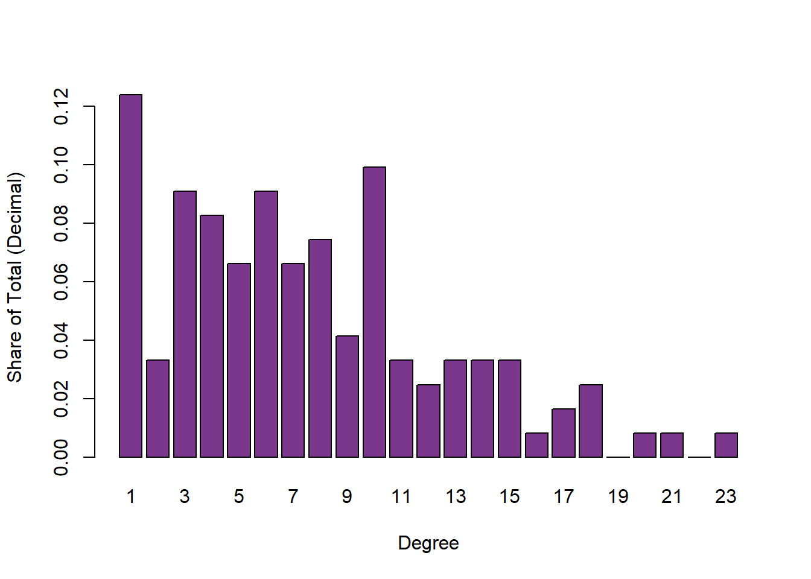
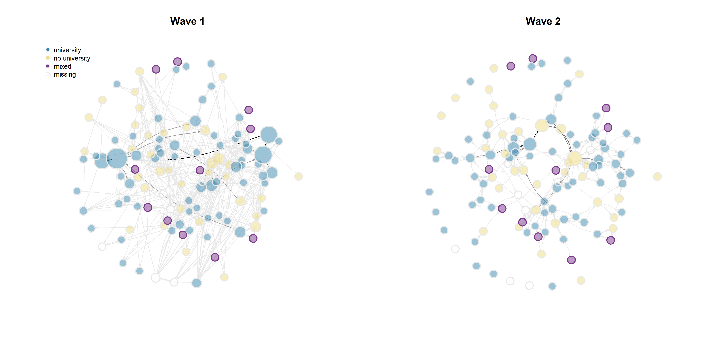
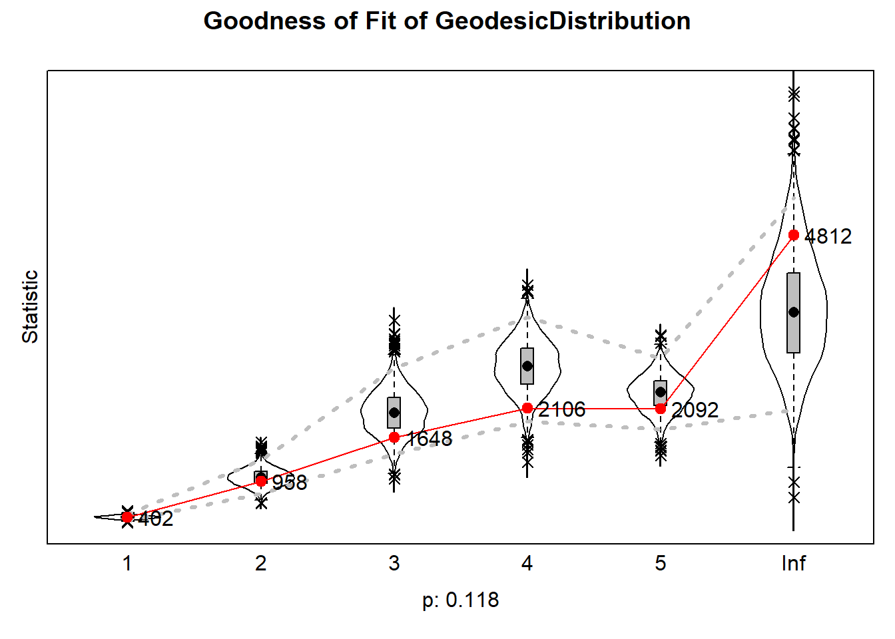
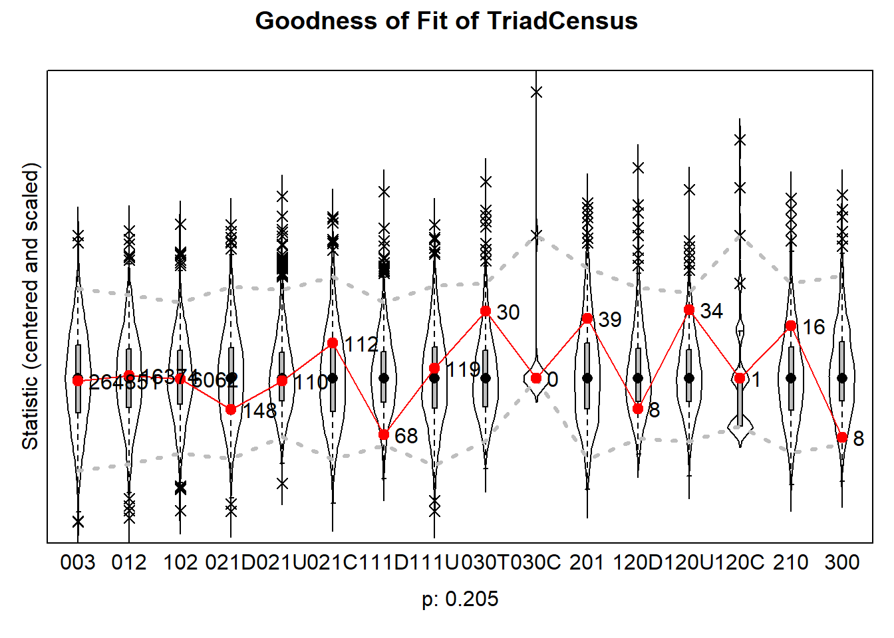
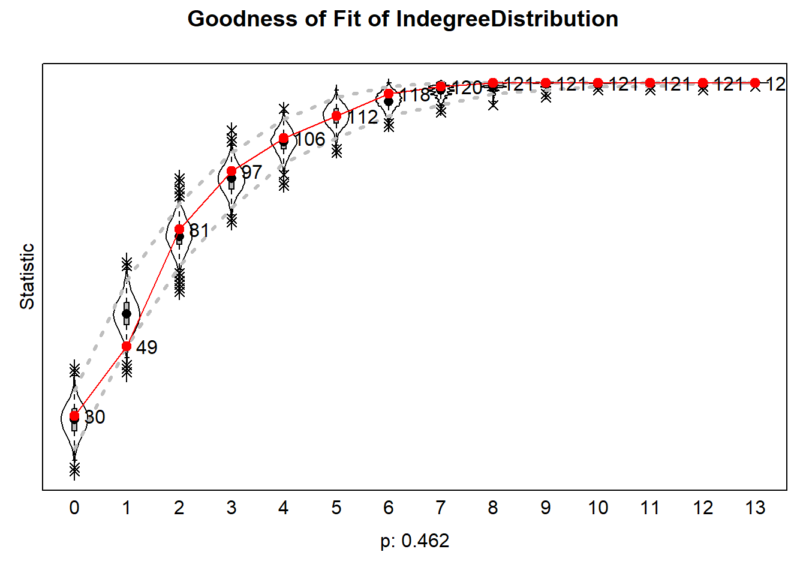
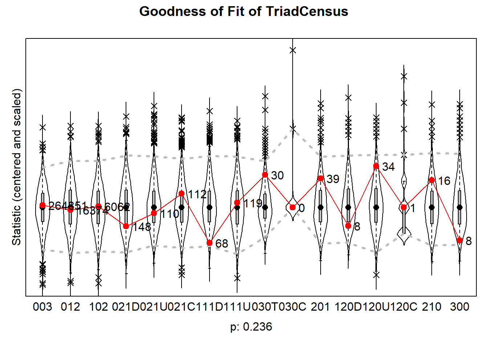
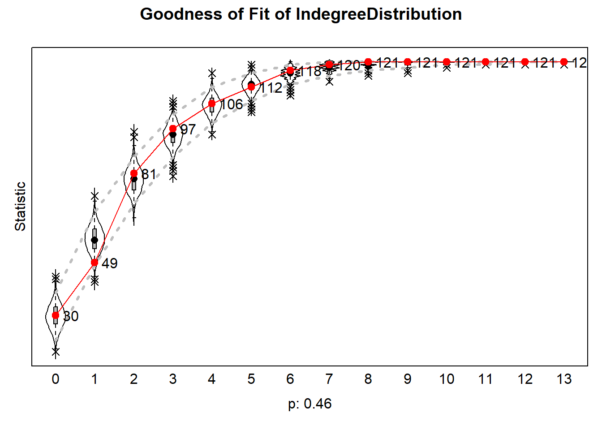
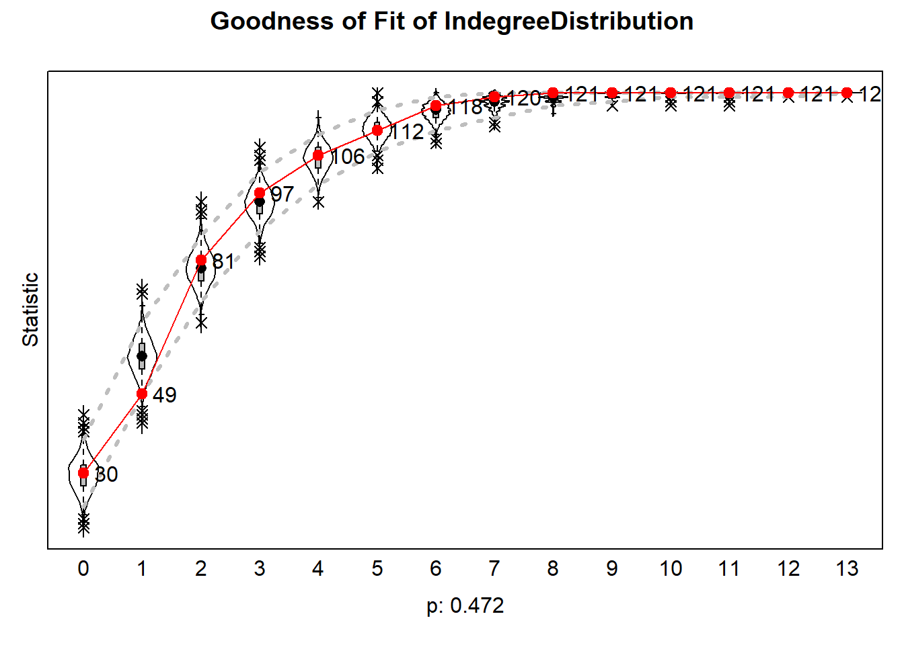
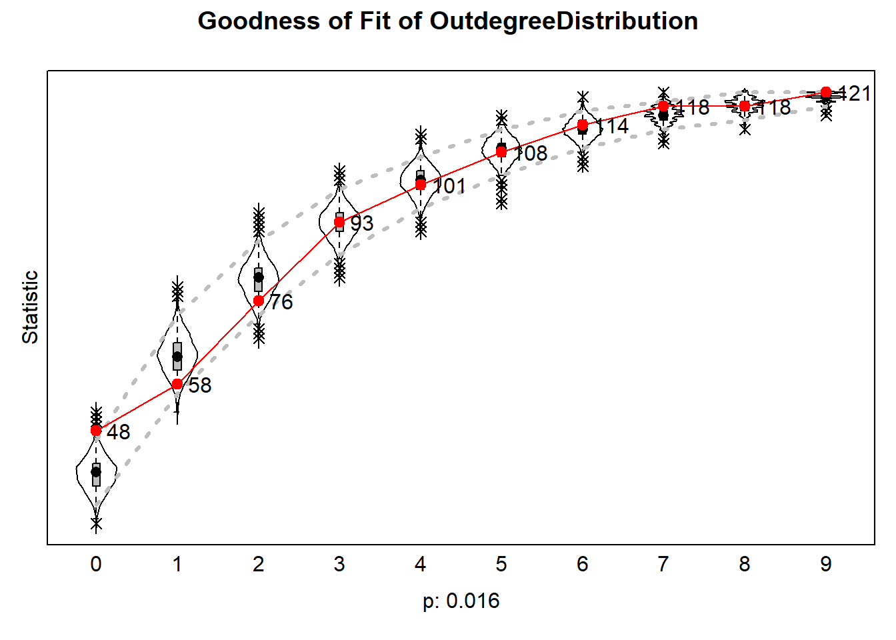
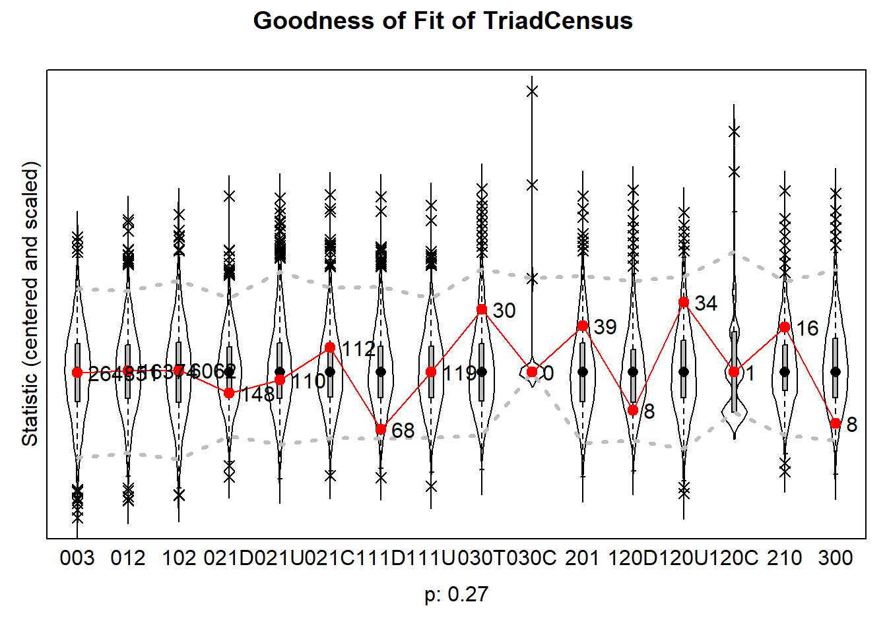

Analyses and Results
Susanna
2026-09-29
rm(list = ls())
#function by Jochem
fpackage.check <- function(packages) {
lapply(packages, FUN = function(x) {
if (!require(x, character.only = TRUE)) {
install.packages(x, dependencies = TRUE)
library(x, character.only = TRUE)
}
})
}
fsave <- function(x, file = NULL, location = "./data/processed/") {
ifelse(!dir.exists("data"), dir.create("data"), FALSE)
ifelse(!dir.exists("data/processed"), dir.create("data/processed"), FALSE)
if (is.null(file))
file = deparse(substitute(x))
datename <- substr(gsub("[:-]", "", Sys.time()), 1, 8)
totalname <- paste(location, datename, file, ".rda", sep = "")
save(x, file = totalname) #need to fix if file is reloaded as input name, not as x.
}
fload <- function(filename) {
load(filename)
get(ls()[ls() != "filename"])
}
fshowdf <- function(x, ...) {
knitr::kable(x, digits = 2, "html", ...) %>%
kableExtra::kable_styling(bootstrap_options = c("striped", "hover")) %>%
kableExtra::scroll_box(width = "100%", height = "300px")
}
colorize <- function(x, color) {
sprintf("<span style='color: %s;'>%s</span>", color, x)
}
packages <- c("sna","ape", "network", "devtools", "igraph", "RSiena", "tidyverse", "stringdist", "stringi")
lapply(packages, require, character.only=T)## Loading required package: sna## Warning: package 'sna' was built under R version 4.5.3## Loading required package: statnet.common## Warning: package 'statnet.common' was built under R version 4.5.3##
## Attaching package: 'statnet.common'## The following objects are masked from 'package:base':
##
## attr, order, replace## Loading required package: network## Warning: package 'network' was built under R version 4.5.3##
## 'network' 1.20.0 (2026-02-06), part of the Statnet Project
## * 'news(package="network")' for changes since last version
## * 'citation("network")' for citation information
## * 'https://statnet.org' for help, support, and other information## sna: Tools for Social Network Analysis
## Version 2.8 created on 2024-09-07.
## copyright (c) 2005, Carter T. Butts, University of California-Irvine
## For citation information, type citation("sna").
## Type help(package="sna") to get started.## Loading required package: ape## Warning: package 'ape' was built under R version 4.5.3##
## Attaching package: 'ape'## The following objects are masked from 'package:sna':
##
## consensus, degree## Loading required package: devtools## Warning: package 'devtools' was built under R version 4.5.3## Loading required package: usethis## Warning: package 'usethis' was built under R version 4.5.3## Loading required package: igraph## Warning: package 'igraph' was built under R version 4.5.3##
## Attaching package: 'igraph'## The following objects are masked from 'package:ape':
##
## degree, edges, mst, ring## The following objects are masked from 'package:sna':
##
## betweenness, bonpow, closeness, components, degree, dyad.census,
## evcent, hierarchy, is.connected, neighborhood, triad.census## The following objects are masked from 'package:network':
##
## %c%, %s%, add.edges, add.vertices, delete.edges, delete.vertices,
## get.edge.attribute, get.edges, get.vertex.attribute, is.bipartite,
## is.directed, list.edge.attributes, list.vertex.attributes,
## set.edge.attribute, set.vertex.attribute## The following objects are masked from 'package:stats':
##
## decompose, spectrum## The following object is masked from 'package:base':
##
## union## Loading required package: RSiena## Warning: package 'RSiena' was built under R version 4.5.3## Loading required package: tidyverse## Warning: package 'tidyverse' was built under R version 4.5.3## Warning: package 'tibble' was built under R version 4.5.3## Warning: package 'tidyr' was built under R version 4.5.3## Warning: package 'readr' was built under R version 4.5.2## Warning: package 'dplyr' was built under R version 4.5.3## Warning: package 'stringr' was built under R version 4.5.3## Warning: package 'forcats' was built under R version 4.5.2## ── Attaching core tidyverse packages ────────────────────── tidyverse 2.0.0 ──
## ✔ dplyr 1.2.1 ✔ readr 2.1.6
## ✔ forcats 1.0.1 ✔ stringr 1.6.0
## ✔ ggplot2 4.0.0 ✔ tibble 3.3.1
## ✔ lubridate 1.9.4 ✔ tidyr 1.3.2
## ✔ purrr 1.1.0## ── Conflicts ──────────────────────────────────────── tidyverse_conflicts() ──
## ✖ lubridate::%--%() masks igraph::%--%()
## ✖ dplyr::as_data_frame() masks tibble::as_data_frame(), igraph::as_data_frame()
## ✖ purrr::compose() masks igraph::compose()
## ✖ tidyr::crossing() masks igraph::crossing()
## ✖ dplyr::filter() masks stats::filter()
## ✖ dplyr::lag() masks stats::lag()
## ✖ purrr::simplify() masks igraph::simplify()
## ✖ dplyr::where() masks ape::where()
## ℹ Use the conflicted package (<http://conflicted.r-lib.org/>) to force all conflicts to become errors
## Loading required package: stringdist## Warning: package 'stringdist' was built under R version 4.5.2##
## Attaching package: 'stringdist'
##
## The following object is masked from 'package:tidyr':
##
## extract
##
## Loading required package: stringi## Warning: package 'stringi' was built under R version 4.5.3## [[1]]
## [1] TRUE
##
## [[2]]
## [1] TRUE
##
## [[3]]
## [1] TRUE
##
## [[4]]
## [1] TRUE
##
## [[5]]
## [1] TRUE
##
## [[6]]
## [1] TRUE
##
## [[7]]
## [1] TRUE
##
## [[8]]
## [1] TRUE
##
## [[9]]
## [1] TRUEload("./data/EduBridgeforRSiena.RData")1 Descriptive Analysis
1.1 Visualisation
hangingt1nona <- hanging_df_t1
hangingt1nona[hangingt1nona==9]<- 0
hangingt1nona <- as.matrix(hangingt1nona)
hangingt1 <- graph_from_adjacency_matrix(hangingt1nona, mode = "directed", weighted = NULL, diag = TRUE, add.colnames = NA, add.rownames = NA)
hangingt2nona <- hanging_df_t2
hangingt2nona[hangingt2nona==9]<- 0
hangingt2nona <- as.matrix(hangingt2nona)
hangingt2 <- graph_from_adjacency_matrix(hangingt2nona, mode = "directed", weighted = NULL, diag = TRUE, add.colnames = NA, add.rownames = NA)
rangegray <- colorRampPalette(c("grey91", "grey50", "grey30", "black"))
nbins <- 5
colourbetweenness <-rangegray(nbins)
colourpareduhigh <- ifelse(is.na(parenteduhigh), "white", ifelse(parentedudif==1, "mediumorchid4", ifelse(parenteduhigh==1, "#3A87AD", "lightgoldenrod")))
colourparedudif <- ifelse(is.na(parentedudif), "grey91", ifelse(parentedudif==1, "mediumorchid4", "grey91"))
layoutfr2 <- layout.fruchterman.reingold(hangingt2)## Warning: `layout.fruchterman.reingold()` was deprecated in igraph 2.1.0.
## ℹ Please use `layout_with_fr()` instead.
## This warning is displayed once per session.
## Call `lifecycle::last_lifecycle_warnings()` to see where this warning was
## generated.layoutdh2 <- igraph:: layout_with_dh(hangingt2)
V(hangingt1)$size = igraph::degree(hangingt1) * 0.4 + 7
V(hangingt2)$size = igraph::degree(hangingt2) * 0.4 + 7
{png("plot2.png", width = 14, height = 7, units = "in", res = 300)
par(mfrow = c(1, 2))
plot(hangingt1,
vertex.color = adjustcolor(colourpareduhigh, alpha.f = .5),
vertex.frame.color = colourparedudif,
vertex.frame.width = 2,
vertex.label = NA,
edge.curved = 0.2,
edge.arrow.size = 0.2,
edge.color = colourbetweenness[cut(igraph::edge_betweenness(hangingt1), breaks=nbins )],
layout = layoutfr2,
main = "Wave 1")
legend("topleft", c("university", "no university", "mixed", "missing"), pch = 21, col = "grey91", pt.bg = c("#3A87AD", "lightgoldenrod", "mediumorchid4", "white"), pt.cex = 1,
cex = 0.8, bty = "n", ncol = 1)
plot(hangingt2,
vertex.color = adjustcolor(colourpareduhigh, alpha.f = .5),
vertex.frame.color = colourparedudif,
vertex.frame.width = 2,
vertex.label = NA,
edge.curved = 0.2,
edge.arrow.size = 0.2,
edge.color = colourbetweenness[cut(igraph::edge_betweenness(hangingt2), breaks=nbins )],
layout = layoutfr2,
main = "Wave 2")
dev.off()}## png
## 2knitr::include_graphics("plot2.png")
Note: Nodes were distributed in the graph based on the Fruchterman-Reingold forcedirected algorithm, which models repulsion between nodes and attraction between nodes that are unconnected. The nodes were fixed in their w2 location for both waves to visualise changes in specific ties. Node size indicates degree, darkness of ties indicates betweenness.
Before investigating whether the hypothesised effects are significant in individual students’ tie-making and -breaking, it is important to understand the observable dynamics within the network. For this purpose, I first explore the descriptive statistics in both waves. I start with descriptives related to the evolution of ties, density, and pathlength, then I discuss triad configurations within the network, before finally calculating segregation based on parental educational attainment to answer research question 1.
1.2 Tie evolution
dyad_census(hangingt1)## $mut
## [1] 93
##
## $asym
## [1] 209
##
## $null
## [1] 6958dyad_census(hangingt2)## $mut
## [1] 60
##
## $asym
## [1] 150
##
## $null
## [1] 7050edge_density(hangingt1)## [1] 0.02720386edge_density(hangingt2)## [1] 0.01859504Between wave 1 and wave 2, we can observe a substantial reduction in the number of ties within students’ hanging out network. While in the first wave, a total number of 302 pairs were connected, 93 of which were reciprocal connections, by the second wave, only 210 connections remain. This entails a drop of 30.5% of the initial number of dyads. This is reflected in density, which is low in both networks, but also drops substantially between waves (from 0.027 to 0.019). This is also observable in the above figure: many ties are broken between wave 1 and wave 2. The evolution of hanging out networks in this community of university students is thus strongly shaped by endowment, i.e. the decision to maintain or break a tie. Investigating homophily effects in endowment specifically is therefore particularly relevant for this context.
degdis1 <- degree_distribution(hangingt1, cumulative = FALSE)
library(lattice)
barplot(degdis1, xlab = "Degree", ylab = "Share of Total (Decimal)", names.arg = 1:23, col = "mediumorchid4")
degdis2 <- degree_distribution(hangingt2, cumulative = FALSE)
barplot(degdis2, xlab = "Degree", ylab = "Share of Total (Decimal)", names.arg = 1:20, col = "mediumorchid4")
mean_distance(hangingt1, directed = T, unconnected = T, details = T)## $res
## [1] 4.840779
##
## $unconnected
## [1] 8566mean_distance(hangingt2, directed = T, unconnected = T, details = T)## $res
## [1] 4.591732
##
## $unconnected
## [1] 11593Surprisingly, the average shortest path length between vectors, not counting isolates, decreases from 4.84 in the first wave to 4.59 in the second wave - despite the reduction in the total number of connected pairs. This may be explained by the presence of several efficient brokers between clusters, visible in the wave 2 network depiction.
hangingt1m <- as.matrix(hanging_df_t1)
hangingt2m <- as.matrix(hanging_df_t2)
sna::triad.census(hangingt1m)## 003 012 102 021D 021U 021C 111D 111U 030T 030C 201 120D 120U 120C
## [1,] 185654 19612 9095 62226 231 208 247 920 2244 2 92 1046 6048 13
## 210 300
## [1,] 134 208sna::triad.census(hangingt2m)## 003 012 102 021D 021U 021C 111D 111U 030T 030C 201 120D 120U 120C
## [1,] 206607 14432 6184 53311 117 112 88 1050 1256 0 54 538 4019 13
## 210 300
## [1,] 102 97Between both waves, we can observe a reduction in all triad types except for the 111U constellation, which raises from occurring 920 times to occurring 1050 times, and the 120C constellation, which remains constant. This observed reduction in most tryad compositions is likely another consequence of the overall reduction in ties.
1.3 Segregation
To answer the first research question, I calculate Moran’s I, a spatial autocorrelation measure used to indicate whether nodes that are closer to one another are more alike. Under the null hypothesis of no segregation, the expected value of I is -1/(N-1). An observed I larger than the expected indicates positive autocorrelation, an observed I smaller than the expected indicates negative autocorrelation (the opposite of segregation) (Di Salvatore and Ruggeri 2021). As I am interested in selection rather than influence, I use a distance decay function of 1, i.e. I test whether students who are directly connected are more similar in their parents’ highest educational attainment. I do not rowstandardise, since rowstandardising would treat a student connected to only one peer with a different educational heritage and no others the same as it would a student connected to several such peers and no others.
hangingt1m <- as.matrix(hanging_df_t1)
hangingt2m <- as.matrix(hanging_df_t2)
# step 1: calculate distances
geodistances <- geodist(hangingt1m, count.paths = TRUE)
geodistances <- geodistances$gdist
# set the distance to yourself as Inf
diag(geodistances) <- Inf
# step 2: define a distance decay function. This one is pretty standard in the spatial autocorrelation literature but actually pretty arbitrary.
weights1 <- geodistances == 1
weights2 <- exp(-geodistances)#Jochem's formula for Moran's I
fMoran.I <- function(x, weight, scaled = FALSE, na.rm = FALSE, alternative = "two.sided", rowstandardize = TRUE) {
if (rowstandardize) {
if (dim(weight)[1] != dim(weight)[2])
stop("'weight' must be a square matrix")
n <- length(x)
if (dim(weight)[1] != n)
stop("'weight' must have as many rows as observations in 'x'")
ei <- -1/(n - 1)
nas <- is.na(x)
if (any(nas)) {
if (na.rm) {
x <- x[!nas]
n <- length(x)
weight <- weight[!nas, !nas]
} else {
warning("'x' has missing values: maybe you wanted to set na.rm = TRUE?")
return(list(observed = NA, expected = ei, sd = NA, p.value = NA))
}
}
ROWSUM <- rowSums(weight)
ROWSUM[ROWSUM == 0] <- 1
weight <- weight/ROWSUM
s <- sum(weight)
m <- mean(x)
y <- x - m
cv <- sum(weight * y %o% y)
v <- sum(y^2)
obs <- (n/s) * (cv/v)
if (scaled) {
i.max <- (n/s) * (sd(rowSums(weight) * y)/sqrt(v/(n - 1)))
obs <- obs/i.max
}
S1 <- 0.5 * sum((weight + t(weight))^2)
S2 <- sum((apply(weight, 1, sum) + apply(weight, 2, sum))^2)
s.sq <- s^2
k <- (sum(y^4)/n)/(v/n)^2
sdi <- sqrt((n * ((n^2 - 3 * n + 3) * S1 - n * S2 + 3 * s.sq) - k * (n * (n - 1) * S1 - 2 * n *
S2 + 6 * s.sq))/((n - 1) * (n - 2) * (n - 3) * s.sq) - 1/((n - 1)^2))
alternative <- match.arg(alternative, c("two.sided", "less", "greater"))
pv <- pnorm(obs, mean = ei, sd = sdi)
if (alternative == "two.sided")
pv <- if (obs <= ei)
2 * pv else 2 * (1 - pv)
if (alternative == "greater")
pv <- 1 - pv
list(observed = obs, expected = ei, sd = sdi, p.value = pv)
} else {
if (dim(weight)[1] != dim(weight)[2])
stop("'weight' must be a square matrix")
n <- length(x)
if (dim(weight)[1] != n)
stop("'weight' must have as many rows as observations in 'x'")
ei <- -1/(n - 1)
nas <- is.na(x)
if (any(nas)) {
if (na.rm) {
x <- x[!nas]
n <- length(x)
weight <- weight[!nas, !nas]
} else {
warning("'x' has missing values: maybe you wanted to set na.rm = TRUE?")
return(list(observed = NA, expected = ei, sd = NA, p.value = NA))
}
}
# ROWSUM <- rowSums(weight) ROWSUM[ROWSUM == 0] <- 1 weight <- weight/ROWSUM
s <- sum(weight)
m <- mean(x)
y <- x - m
cv <- sum(weight * y %o% y)
v <- sum(y^2)
obs <- (n/s) * (cv/v)
if (scaled) {
i.max <- (n/s) * (sd(rowSums(weight) * y)/sqrt(v/(n - 1)))
obs <- obs/i.max
}
S1 <- 0.5 * sum((weight + t(weight))^2)
S2 <- sum((apply(weight, 1, sum) + apply(weight, 2, sum))^2)
s.sq <- s^2
k <- (sum(y^4)/n)/(v/n)^2
sdi <- sqrt((n * ((n^2 - 3 * n + 3) * S1 - n * S2 + 3 * s.sq) - k * (n * (n - 1) * S1 - 2 * n *
S2 + 6 * s.sq))/((n - 1) * (n - 2) * (n - 3) * s.sq) - 1/((n - 1)^2))
alternative <- match.arg(alternative, c("two.sided", "less", "greater"))
pv <- pnorm(obs, mean = ei, sd = sdi)
if (alternative == "two.sided")
pv <- if (obs <= ei)
2 * pv else 2 * (1 - pv)
if (alternative == "greater")
pv <- 1 - pv
list(observed = obs, expected = ei, sd = sdi, p.value = pv)
}
}fMoran.I(parenteduhigh, scaled = FALSE, weight = weights1, na.rm = TRUE, rowstandardize = FALSE)## $observed
## [1] -0.005732169
##
## $expected
## [1] -0.008333333
##
## $sd
## [1] 0.01484742
##
## $p.value
## [1] 0.860928# step 1: calculate distances
geodistances2 <- geodist(hangingt2m, count.paths = TRUE)
geodistances2 <- geodistances2$gdist
# set the distance to yourself as Inf
diag(geodistances2) <- Inf
# step 2: define a distance decay function. This one is pretty standard in the spatial autocorrelation literature but actually pretty arbitrary.
weights3 <- exp(-geodistances2)
fMoran.I(parenteduhigh, scaled = FALSE, weight = weights3, na.rm = TRUE, rowstandardize = FALSE)## $observed
## [1] -0.01137761
##
## $expected
## [1] -0.008333333
##
## $sd
## [1] 0.00920677
##
## $p.value
## [1] 0.740904There is no evidence for segregation based on parental educational levels in either wave, indicating that across the entire network, students that hang out together are not necessarily more similar regarding the highest educational attainment among their parent(s)/caregiver(s). However, it is possible for the overall segregation to be insignificant while segregation does occur within specific clusters, in this case friend groups (Di Salvatore and Ruggeri 2021). Additionally, other network effects such as meeting opportunities through mutual friends may account for the lack of observed segregation. To answer research question two and three, it is therefore necessary to model students’ individual evaluation functions.
1.4 Students with a Mixed Background
V(hangingt1)$size = igraph::betweenness(hangingt1, normalized = T, directed = TRUE) * 70 + 7
V(hangingt2)$size = igraph::betweenness(hangingt2, normalized = T, directed = TRUE) * 70 + 7
{png("plot3.png", width = 14, height = 7, units = "in", res = 300)
par(mfrow = c(1, 2))
plot(hangingt1,
vertex.color = adjustcolor(colourpareduhigh, alpha.f = .5),
vertex.frame.color = colourparedudif,
vertex.frame.width = 2,
vertex.label = NA,
edge.curved = 0.2,
edge.arrow.size = 0.2,
edge.color = colourbetweenness[cut(igraph::edge_betweenness(hangingt1), breaks=nbins )],
layout = layoutfr2,
main = "Wave 1")
legend("topleft", c("university", "no university", "mixed", "missing"), pch = 21, col = "grey91", pt.bg = c("#3A87AD", "lightgoldenrod", "mediumorchid4", "white"), pt.cex = 1,
cex = 0.8, bty = "n", ncol = 1)
plot(hangingt2,
vertex.color = adjustcolor(colourpareduhigh, alpha.f = .5),
vertex.frame.color = colourparedudif,
vertex.frame.width = 2,
vertex.label = NA,
edge.curved = 0.2,
edge.arrow.size = 0.2,
edge.color = colourbetweenness[cut(igraph::edge_betweenness(hangingt2), breaks=nbins )],
layout = layoutfr2,
main = "Wave 2")
dev.off()}## png
## 2knitr::include_graphics("plot3.png")
2 Explanatory Analysis
2.1 Model input preparation
2.1.1 Network in waves
#wave 1 = hangingt1, wave 2 = hangingt2
hangingt1m <- as.matrix(hanging_df_t1)
hangingt2m <- as.matrix(hanging_df_t2)
#diagonals to zero
diag(hangingt1m) <- 0
diag(hangingt2m) <- 0
#missings to NA
hangingt1mwna <- hangingt1m
hangingt1mwna[hangingt1mwna == 9] <- 10
hangingt2mwna <- hangingt2m
hangingt2mwna[hangingt2mwna == 9] <- 10
#nets into array
hanging_array <- array(data = c(hangingt1mwna, hangingt2mwna), dim = c(dim(hangingt1mwna), 2))
#dependent
net <- sienaDependent(hanging_array)2.1.2 Covariates: parenteduhigh, parentedudif, ethnew, gendernew
gendercov <- coCovar(gendernew) #constant covariate
ethcov <- coCovar(ethnew)
paredudifcov <- coCovar(parentedudif)
pareduhighcov <- coCovar(parenteduhigh)
mydata <- sienaDataCreate(net, gendercov, ethcov, paredudifcov, pareduhighcov)2.1.3 Overview of Siena data
write_report(mydata, outputName = "sienaData")## Basic data description written to text file sienaData.txt. ************************
sienaData.txt
************************Filename is sienaData.txt.
This file contains basic descriptives for SIENA data set
<
Date and time: 27/10/2026 11:07:11
RSiena version 1.6.6 (20 04 2026)
(1?) Data input. ===========
2 observations, 121 actors, 1 dependent network variables, 0 dependent bipartite variables, 0 dependent discrete behavior variables, 0 dependent continuous behavior variables, 4 constant actor covariates, 0 exogenous changing actor covariates, 0 constant dyadic covariates, 0 exogenous changing dyadic covariates, 0 no files with times of composition change.
(2?) Reading network variables. ————————–
Name of network variable: net. oneMode network. For observation moment 1, degree distributions are as follows: Nodes 1 2 3 4 5 6 7 8 9 10 11 12 13 14 15 16 17 18 19 20 21 22 23 24 25 26 27 28 29 30 31 32 33 34 35 36 37 38 39 40 41 42 43 44 45 46 47 48 49 50 51 52 53 54 55 56 57 58 59 60 61 62 63 64 65 66 67 68 69 70 71 72 73 74 75 76 77 78 79 80 81 82 83 84 85 86 87 88 89 90 91 92 93 94 95 96 97 98 99 100 101 102 103 104 105 106 107 108 109 110 111 112 113 114 115 116 117 118 119 120 121 out-degrees 6 2 1 1 8 7 0 1 7 0 0 9 4 0 1 4 1 2 1 0 3 3 5 8 3 0 0 0 6 4 9 7 0 0 1 3 1 0 0 2 0 6 0 2 7 9 5 0 7 7 0 0 2 0 0 2 1 8 0 8 4 6 6 4 2 7 7 7 3 1 2 8 5 2 3 2 0 3 0 8 4 5 9 1 2 2 3 2 7 7 10 0 5 0 3 9 10 1 3 2 2 2 0 2 3 8 0 5 3 1 0 0 2 0 1 3 4 8 6 6 0 in-degrees 3 6 1 7 3 6 0 3 4 3 4 3 2 4 1 1 1 3 1 0 0 7 4 9 2 1 0 0 1 3 10 7 9 3 1 2 3 0 0 7 0 6 0 0 2 11 3 6 8 6 0 1 1 7 0 3 4 6 0 1 0 6 8 1 1 6 7 5 4 5 1 1 2 1 3 3 8 2 6 2 6 5 13 2 3 2 1 7 6 2 6 7 2 0 4 8 1 0 3 0 0 3 2 2 0 8 0 2 5 1 3 9 0 0 0 6 2 9 0 3 0
The input file contains codes for structurally determined values: 1320 structural zeros were found (code 10). 0 structural one was found (code 11).
No missing data for observation 1.
For observation moment 2, degree distributions are as follows: Nodes 1 2 3 4 5 6 7 8 9 10 11 12 13 14 15 16 17 18 19 20 21 22 23 24 25 26 27 28 29 30 31 32 33 34 35 36 37 38 39 40 41 42 43 44 45 46 47 48 49 50 51 52 53 54 55 56 57 58 59 60 61 62 63 64 65 66 67 68 69 70 71 72 73 74 75 76 77 78 79 80 81 82 83 84 85 86 87 88 89 90 91 92 93 94 95 96 97 98 99 100 101 102 103 104 105 106 107 108 109 110 111 112 113 114 115 116 117 118 119 120 121 out-degrees 3 2 0 0 4 3 7 2 5 0 0 7 3 0 2 2 2 4 1 1 0 6 0 3 0 0 1 0 0 0 0 0 0 0 0 2 1 0 1 3 0 6 2 2 5 9 5 5 3 7 0 0 2 0 2 2 0 0 0 5 2 3 6 2 2 0 0 4 4 0 0 6 7 0 3 0 0 2 0 1 0 3 9 1 3 0 1 0 0 4 3 0 7 0 9 6 3 3 2 0 0 2 4 1 5 5 2 4 2 2 1 6 3 3 0 3 3 1 4 3 0 in-degrees 2 2 0 5 1 2 5 2 2 0 1 4 2 0 1 1 1 2 1 0 0 5 0 6 4 0 0 1 3 2 0 4 8 2 0 2 4 3 2 3 5 3 0 0 2 5 3 3 3 2 4 0 2 7 0 0 2 5 1 1 2 2 4 0 2 3 0 0 3 2 0 2 2 0 3 0 6 2 3 2 2 3 10 2 2 1 2 3 0 1 6 0 2 1 7 6 3 0 2 0 1 2 4 2 2 4 0 1 5 0 0 3 0 2 0 6 2 5 6 2 1
The input file contains codes for structurally determined values: 1080 structural zeros were found (code 10). 0 structural one was found (code 11).
No missing data for observation 2.
(2?) Reading constant actor covariates. ———————————-
4 variables, named: gendercov
ethcov
paredudifcov
pareduhighcov
A total of 4 non-changing individual covariates.
Number of missing cases: gendercov 0 ( 0.0 %) ethcov 0 ( 0.0 %) paredudifcov 8 ( 6.6 %) pareduhighcov 3 ( 2.5 %)
Information about covariates: minimum maximum mean centered gendercov 1.0 2.0 1.653 Y ethcov 1.0 6.0 2.471 Y paredudifcov 0.0 1.0 0.097 Y pareduhighcov 0.0 1.0 0.678 Y The mean values are subtracted from the covariates.
For the similarity variable calculated from each actor covariate, the mean is subtracted. These means are: Similarity gendercov : 0.5430 Similarity ethcov : 0.6842 Similarity paredudifcov : 0.8227 Similarity pareduhighcov : 0.5596
(1?) Initial data description. =========================
(2?) Change in networks: ——————-
For the following statistics, missing values (if any) are not counted. Further, structurally determined entries are treated as observed entries, except for calculating the distances, where missings and structurally determined entries at the beginning or end of a period are disregarded. This may imply that the columns 0 => 1 and 1 => 0 do not add up to the distance column.
Network density indicators: observation time 1 2 density 0.027 0.019 average degree 3.264 2.231 number of ties 395 270 missing fraction 0.000 0.000
The average degree is 2.748
Tie changes between subsequent observations: periods 0 => 0 0 => 1 1 => 0 1 => 1 Distance Jaccard Missing 1 ==> 2 14001 124 249 146 328 0.281 0 (0%)
Directed dyad Counts: observation total mutual asymm. null 1. 14520 186 418 13916 2. 14520 120 300 14100
2.2 Standard values for initial parameter values
basic rate parameter net 5.4680 outdegree (density) -1.7253
Initialisation of data set <
2.3 Model 1: Homophily
myeff0910 <- getEffects(mydata)
# effectsDocumentation(myeff0910)ifelse(!dir.exists("results"), dir.create("results"), FALSE)## [1] FALSEprint01Report(mydata, modelname = "./results/edu_bridge")First some basic effects that are not really of theoretical interest:
myeff <- includeEffects(myeff0910, outAct, inPop, inAct, recip, gwespFF) ## effectNumber effectName shortName include fix test
## 1 18 reciprocity recip TRUE FALSE FALSE
## 2 57 GWESP I -> K -> J (#) gwespFF TRUE FALSE FALSE
## 3 81 indegree - popularity inPop TRUE FALSE FALSE
## 4 118 outdegree - activity outAct TRUE FALSE FALSE
## 5 127 indegree - activity(#) inAct TRUE FALSE FALSE
## initialValue parm
## 1 0 0
## 2 0 69
## 3 0 0
## 4 0 0
## 5 0 1Now I’ll introduce homophily as endow function:
myeff <- includeEffects(myeff, sameX, egoX, altX, type = "endow", interaction1 = "pareduhighcov")## effectNumber effectName shortName include fix test initialValue
## 1 818 pareduhighcov alter altX TRUE FALSE FALSE 0
## 2 833 pareduhighcov ego egoX TRUE FALSE FALSE 0
## 3 889 same pareduhighcov sameX TRUE FALSE FALSE 0
## parm type
## 1 0 endow
## 2 0 endow
## 3 0 endowmyeff## effectName include fix test initialValue parm type
## 1 basic rate parameter net TRUE FALSE FALSE 5.46796 0 rate
## 2 outdegree (density) TRUE FALSE FALSE -1.72530 0 eval
## 3 reciprocity TRUE FALSE FALSE 0.00000 0 eval
## 4 GWESP I -> K -> J (#) TRUE FALSE FALSE 0.00000 69 eval
## 5 indegree - popularity TRUE FALSE FALSE 0.00000 0 eval
## 6 outdegree - activity TRUE FALSE FALSE 0.00000 0 eval
## 7 indegree - activity(#) TRUE FALSE FALSE 0.00000 1 eval
## 8 pareduhighcov alter TRUE FALSE FALSE 0.00000 0 endow
## 9 pareduhighcov ego TRUE FALSE FALSE 0.00000 0 endow
## 10 same pareduhighcov TRUE FALSE FALSE 0.00000 0 endowAnd as creation function:
myeff <- includeEffects(myeff, sameX, egoX, altX, type = "creation", interaction1 = "pareduhighcov")## effectNumber effectName shortName include fix test initialValue
## 1 819 pareduhighcov alter altX TRUE FALSE FALSE 0
## 2 834 pareduhighcov ego egoX TRUE FALSE FALSE 0
## 3 890 same pareduhighcov sameX TRUE FALSE FALSE 0
## parm type
## 1 0 creation
## 2 0 creation
## 3 0 creationmyeff## effectName include fix test initialValue parm type
## 1 basic rate parameter net TRUE FALSE FALSE 5.46796 0 rate
## 2 outdegree (density) TRUE FALSE FALSE -1.72530 0 eval
## 3 reciprocity TRUE FALSE FALSE 0.00000 0 eval
## 4 GWESP I -> K -> J (#) TRUE FALSE FALSE 0.00000 69 eval
## 5 indegree - popularity TRUE FALSE FALSE 0.00000 0 eval
## 6 outdegree - activity TRUE FALSE FALSE 0.00000 0 eval
## 7 indegree - activity(#) TRUE FALSE FALSE 0.00000 1 eval
## 8 pareduhighcov alter TRUE FALSE FALSE 0.00000 0 endow
## 9 pareduhighcov alter TRUE FALSE FALSE 0.00000 0 creation
## 10 pareduhighcov ego TRUE FALSE FALSE 0.00000 0 endow
## 11 pareduhighcov ego TRUE FALSE FALSE 0.00000 0 creation
## 12 same pareduhighcov TRUE FALSE FALSE 0.00000 0 endow
## 13 same pareduhighcov TRUE FALSE FALSE 0.00000 0 creationmyAlgorithm <- sienaAlgorithmCreate(projname = "edu_bridge",
MaxDegree = c(net = 10),
n3 = 2000,
seed = 30000)## If you use this algorithm object, siena07 will create/use an output file edu_bridge.txt .mod1 <- siena07(myAlgorithm, data = mydata, effects = myeff, returnDeps = TRUE) #mod1 <- saveRDS(mod1, "mod1.rds")
mod1 <- readRDS("mod1.rds")The overall convergence ratio is under .25, which is acceptable. Convergence of individual parameters is also sufficient (absolute values all under 0.1). The rate parameter value is 8.58, indicating that each actor had, on average, 8.58 options for change (‘mini-steps’) within the simulation.
results <- data.frame(
effect = mod1$effects$effectName,
b = mod1$theta,
se = mod1$se,
t = mod1$theta / mod1$se,
p = 2 * pnorm(-abs(mod1$theta / mod1$se)))
pander::pander(results)| effect | b | se | t | p |
|---|---|---|---|---|
| outdegree (density) | -2.715 | 0.2693 | -10.08 | 6.766e-24 |
| reciprocity | 2.82 | 0.6229 | 4.528 | 5.964e-06 |
| GWESP I -> K -> J (69) | 1.925 | 0.3223 | 5.971 | 2.36e-09 |
| indegree - popularity | -0.05355 | 0.04392 | -1.219 | 0.2227 |
| outdegree - activity | 0.07463 | 0.03171 | 2.353 | 0.01861 |
| indegree - activity(1) | -0.351 | 0.1521 | -2.308 | 0.02099 |
| pareduhighcov alter | 0.9689 | 0.3626 | 2.672 | 0.007541 |
| pareduhighcov alter | -0.2426 | 0.3162 | -0.7674 | 0.4428 |
| pareduhighcov ego | 6.862 | 4.928 | 1.392 | 0.1638 |
| pareduhighcov ego | -7.503 | 5.02 | -1.495 | 0.135 |
| same pareduhighcov | -1.551 | 0.3622 | -4.282 | 1.85e-05 |
| same pareduhighcov | 1.298 | 0.3121 | 4.159 | 3.202e-05 |
2.3.1 Goodness of Fit
#Jochem's formula for Geodesic Distribution
GeodesicDistribution <- function(i, data, sims, period, groupName, varName, levls = c(1:5, Inf), cumulative = TRUE,
...) {
x <- networkExtraction(i, data, sims, period, groupName, varName)
require(sna)
a <- sna::geodist(symmetrize(x))$gdist
if (cumulative) {
gdi <- sapply(levls, function(i) {
sum(a <= i)
})
} else {
gdi <- sapply(levls, function(i) {
sum(a == i)
})
}
names(gdi) <- as.character(levls)
gdi
}
# The following function is taken from the help page for sienaTest
testall <- function(ans) {
for (i in which(ans$test)) {
sct <- score.Test(ans, i)
cat(ans$requestedEffects$effectName[i], "\n")
print(sct)
}
invisible(score.Test(ans))
}gofinm1 <- sienaGOF(mod1, IndegreeDistribution, verbose = FALSE, join = TRUE, varName = "net", levls = 0:13)
plot(gofinm1)## Note: some statistics are not plotted because their variance is 0.
## This holds for the statistic: 13.
gofoutm1 <- sienaGOF(mod1, OutdegreeDistribution, verbose = FALSE, join = TRUE, varName = "net", levls = 0:10)
plot(gofoutm1)## Note: some statistics are not plotted because their variance is 0.
## This holds for the statistic: 10.gofgdm1 <- sienaGOF(mod1, GeodesicDistribution, cumulative = FALSE, verbose = FALSE, join = TRUE, varName = "net")
plot(gofgdm1)
goftrim1 <- sienaGOF(mod1, TriadCensus, verbose = FALSE, join = TRUE, varName = "net")
plot(goftrim1, center = TRUE, scale = TRUE)The simulated networks based on the included effects show reasonable similarity with the observed network in terms of in-degree distribution, geodesic distribution, and triad census. However, the model seems to somewhat underestimate the number of nodes with out-degree 0, and overestimate the number of nodes with out-degree 1. A potential explanation for the higher observed number of nodes with out-degree 0 might be that isolated students are less likely to increase their out-degree. In the following sub-model, I thus include the outIso effect.
2.3.2 (sub)Model 1.1: outIso
myeff1.1 <- includeEffects(myeff, outIso)## effectNumber effectName shortName include fix test initialValue parm
## 1 149 out-isolate outIso TRUE FALSE FALSE 0 1myeff1.1## effectName include fix test initialValue parm type
## 1 basic rate parameter net TRUE FALSE FALSE 5.46796 0 rate
## 2 outdegree (density) TRUE FALSE FALSE -1.72530 0 eval
## 3 reciprocity TRUE FALSE FALSE 0.00000 0 eval
## 4 GWESP I -> K -> J (#) TRUE FALSE FALSE 0.00000 69 eval
## 5 indegree - popularity TRUE FALSE FALSE 0.00000 0 eval
## 6 outdegree - activity TRUE FALSE FALSE 0.00000 0 eval
## 7 indegree - activity(#) TRUE FALSE FALSE 0.00000 1 eval
## 8 out-isolate TRUE FALSE FALSE 0.00000 1 eval
## 9 pareduhighcov alter TRUE FALSE FALSE 0.00000 0 endow
## 10 pareduhighcov alter TRUE FALSE FALSE 0.00000 0 creation
## 11 pareduhighcov ego TRUE FALSE FALSE 0.00000 0 endow
## 12 pareduhighcov ego TRUE FALSE FALSE 0.00000 0 creation
## 13 same pareduhighcov TRUE FALSE FALSE 0.00000 0 endow
## 14 same pareduhighcov TRUE FALSE FALSE 0.00000 0 creationmod1.1 <- siena07(myAlgorithm, data = mydata, effects = myeff1.1, prevAns = mod1, returnDeps = TRUE) #mod1.1 <- saveRDS(mod1.1, "mod1.1.rds")
mod1.1 <- readRDS("mod1.1.rds")results2 <- data.frame(
effect = mod1.1$effects$effectName,
b = mod1.1$theta,
se = mod1.1$se,
t = mod1.1$theta / mod1.1$se,
p = 2 * pnorm(-abs(mod1.1$theta / mod1.1$se)))
pander::pander(results2)| effect | b | se | t | p |
|---|---|---|---|---|
| outdegree (density) | -0.6477 | 0.9928 | -0.6524 | 0.5141 |
| reciprocity | 3.097 | 0.7478 | 4.142 | 3.444e-05 |
| GWESP I -> K -> J (69) | 1.805 | 0.3941 | 4.579 | 4.671e-06 |
| indegree - popularity | -0.181 | 0.08013 | -2.258 | 0.02394 |
| outdegree - activity | -0.1088 | 0.09206 | -1.182 | 0.2372 |
| indegree - activity(1) | -0.6318 | 0.3397 | -1.86 | 0.06289 |
| out-isolate | 4.461 | 1.898 | 2.351 | 0.01874 |
| pareduhighcov alter | 1.905 | 0.54 | 3.528 | 0.000419 |
| pareduhighcov alter | -0.4665 | 0.4123 | -1.132 | 0.2578 |
| pareduhighcov ego | 7.21 | 4.922 | 1.465 | 0.143 |
| pareduhighcov ego | -8.792 | 4.719 | -1.863 | 0.06241 |
| same pareduhighcov | -1.506 | 0.4596 | -3.278 | 0.001047 |
| same pareduhighcov | 1.37 | 0.5265 | 2.602 | 0.00928 |
Although the overall maximum convergence ratio is acceptable, including the outIso effect destabilises the estimation of the individual effects, reflected in very high convergence t-ratio statistics. The ego-effects of highest parental educational attainment demonstrate particularly high standard errors, as well as suspiciously pronounced estimates. The lack of convergence makes this an inappropriate model to proceed with.
2.3.3 (sub)Model 1.2: inIsDegree
myeff1.2 <- includeEffects(myeff, inIsDegree)## effectNumber effectName shortName include fix test initialValue
## 1 160 in-isolate Outdegree inIsDegree TRUE FALSE FALSE 0
## parm
## 1 0myeff1.2## effectName include fix test initialValue parm type
## 1 basic rate parameter net TRUE FALSE FALSE 5.46796 0 rate
## 2 outdegree (density) TRUE FALSE FALSE -1.72530 0 eval
## 3 reciprocity TRUE FALSE FALSE 0.00000 0 eval
## 4 GWESP I -> K -> J (#) TRUE FALSE FALSE 0.00000 69 eval
## 5 indegree - popularity TRUE FALSE FALSE 0.00000 0 eval
## 6 outdegree - activity TRUE FALSE FALSE 0.00000 0 eval
## 7 indegree - activity(#) TRUE FALSE FALSE 0.00000 1 eval
## 8 in-isolate Outdegree TRUE FALSE FALSE 0.00000 0 eval
## 9 pareduhighcov alter TRUE FALSE FALSE 0.00000 0 endow
## 10 pareduhighcov alter TRUE FALSE FALSE 0.00000 0 creation
## 11 pareduhighcov ego TRUE FALSE FALSE 0.00000 0 endow
## 12 pareduhighcov ego TRUE FALSE FALSE 0.00000 0 creation
## 13 same pareduhighcov TRUE FALSE FALSE 0.00000 0 endow
## 14 same pareduhighcov TRUE FALSE FALSE 0.00000 0 creation#mod1.2 <- siena07(myAlgorithm, data = mydata, effects = myeff1.2, prevAns = mod1, returnDeps = TRUE)
#mod1.2Including inIsDegree greatly destabilises the model. Parameter estimates rise to unrealistically high values, with huge standard errors and individual convergence ratios way above 0.1. The maximum covergence ratio is absolutely unacceptable at 22.8.
2.3.4 (sub)Model 1.3: removing inPop
In model 1, the in-degree popularity was not significant. As this effect is not of theoretical interest, and reducing complexity can aid convergence and fit, I will remove the effect from the model.
myeff1.3 <- includeEffects(myeff0910, outAct, inAct, recip, gwespFF) ## effectNumber effectName shortName include fix test
## 1 18 reciprocity recip TRUE FALSE FALSE
## 2 57 GWESP I -> K -> J (#) gwespFF TRUE FALSE FALSE
## 3 118 outdegree - activity outAct TRUE FALSE FALSE
## 4 127 indegree - activity(#) inAct TRUE FALSE FALSE
## initialValue parm
## 1 0 0
## 2 0 69
## 3 0 0
## 4 0 1myeff1.3## effectName include fix test initialValue parm
## 1 basic rate parameter net TRUE FALSE FALSE 5.46796 0
## 2 outdegree (density) TRUE FALSE FALSE -1.72530 0
## 3 reciprocity TRUE FALSE FALSE 0.00000 0
## 4 GWESP I -> K -> J (#) TRUE FALSE FALSE 0.00000 69
## 5 outdegree - activity TRUE FALSE FALSE 0.00000 0
## 6 indegree - activity(#) TRUE FALSE FALSE 0.00000 1myeff1.3 <- includeEffects(myeff1.3, sameX, egoX, altX, type = "endow", interaction1 = "pareduhighcov")## effectNumber effectName shortName include fix test initialValue
## 1 818 pareduhighcov alter altX TRUE FALSE FALSE 0
## 2 833 pareduhighcov ego egoX TRUE FALSE FALSE 0
## 3 889 same pareduhighcov sameX TRUE FALSE FALSE 0
## parm type
## 1 0 endow
## 2 0 endow
## 3 0 endowmyeff1.3## effectName include fix test initialValue parm type
## 1 basic rate parameter net TRUE FALSE FALSE 5.46796 0 rate
## 2 outdegree (density) TRUE FALSE FALSE -1.72530 0 eval
## 3 reciprocity TRUE FALSE FALSE 0.00000 0 eval
## 4 GWESP I -> K -> J (#) TRUE FALSE FALSE 0.00000 69 eval
## 5 outdegree - activity TRUE FALSE FALSE 0.00000 0 eval
## 6 indegree - activity(#) TRUE FALSE FALSE 0.00000 1 eval
## 7 pareduhighcov alter TRUE FALSE FALSE 0.00000 0 endow
## 8 pareduhighcov ego TRUE FALSE FALSE 0.00000 0 endow
## 9 same pareduhighcov TRUE FALSE FALSE 0.00000 0 endowmyeff1.3 <- includeEffects(myeff1.3, sameX, egoX, altX, type = "creation", interaction1 = "pareduhighcov")## effectNumber effectName shortName include fix test initialValue
## 1 819 pareduhighcov alter altX TRUE FALSE FALSE 0
## 2 834 pareduhighcov ego egoX TRUE FALSE FALSE 0
## 3 890 same pareduhighcov sameX TRUE FALSE FALSE 0
## parm type
## 1 0 creation
## 2 0 creation
## 3 0 creationmyeff1.3## effectName include fix test initialValue parm type
## 1 basic rate parameter net TRUE FALSE FALSE 5.46796 0 rate
## 2 outdegree (density) TRUE FALSE FALSE -1.72530 0 eval
## 3 reciprocity TRUE FALSE FALSE 0.00000 0 eval
## 4 GWESP I -> K -> J (#) TRUE FALSE FALSE 0.00000 69 eval
## 5 outdegree - activity TRUE FALSE FALSE 0.00000 0 eval
## 6 indegree - activity(#) TRUE FALSE FALSE 0.00000 1 eval
## 7 pareduhighcov alter TRUE FALSE FALSE 0.00000 0 endow
## 8 pareduhighcov alter TRUE FALSE FALSE 0.00000 0 creation
## 9 pareduhighcov ego TRUE FALSE FALSE 0.00000 0 endow
## 10 pareduhighcov ego TRUE FALSE FALSE 0.00000 0 creation
## 11 same pareduhighcov TRUE FALSE FALSE 0.00000 0 endow
## 12 same pareduhighcov TRUE FALSE FALSE 0.00000 0 creationmod1.3 <- siena07(myAlgorithm, data = mydata, effects = myeff1.3, returnDeps = TRUE) #mod1.3 <- saveRDS(mod1.3, "mod1.3.rds")
mod1.3 <- readRDS("mod1.3.rds")results1.3 <- data.frame(
effect = mod1.3$effects$effectName,
b = mod1.3$theta,
se = mod1.3$se,
t = mod1.3$theta / mod1.3$se,
p = 2 * pnorm(-abs(mod1.3$theta / mod1.3$se)))
pander::pander(results1.3)| effect | b | se | t | p |
|---|---|---|---|---|
| outdegree (density) | -2.935 | 0.2271 | -12.92 | 3.346e-38 |
| reciprocity | 3.065 | 0.7255 | 4.225 | 2.387e-05 |
| GWESP I -> K -> J (69) | 1.931 | 0.4913 | 3.931 | 8.451e-05 |
| outdegree - activity | 0.0785 | 0.03125 | 2.512 | 0.012 |
| indegree - activity(1) | -0.3917 | 0.1722 | -2.274 | 0.02297 |
| pareduhighcov alter | 1.02 | 0.3321 | 3.072 | 0.002125 |
| pareduhighcov alter | -0.2473 | 0.25 | -0.9894 | 0.3225 |
| pareduhighcov ego | 6.869 | 6.478 | 1.06 | 0.289 |
| pareduhighcov ego | -7.525 | 6.634 | -1.134 | 0.2567 |
| same pareduhighcov | -1.64 | 0.4258 | -3.852 | 0.0001173 |
| same pareduhighcov | 1.353 | 0.552 | 2.451 | 0.01425 |
No big changes in convergence can be observed compared to model 1. The in-degree popularity x out-degree activity interaction effect remains significant in the absence of one of its lower-order effects. Both the endowment and the creation homophily effects remain significant (p < .001 and p = .014, respectively). The creation estimate is positive, indicating that students prefer forming ties with peers with the same highest parental educational attainment as themselves (e.g. first-generation students prefer ties with other first-generation students, students with a generational history of university attendance prefer ties with other students who have a generational history of university attendance). The sign for the endowment estimate is negative, indicating that homophily is weaker for the decision to maintain a tie than for creating new ties. Interestingly, the alter effect of highest parental educational attainment in endowment is also significant, with a positive parameter estimate. This indicates that students prefer maintaining ties with peers whose parents have university experience.
2.3.5 Goodness of Fit
gofinm1.3 <- sienaGOF(mod1.3, IndegreeDistribution, verbose = FALSE, join = TRUE, varName = "net", levls = 0:13)
plot(gofinm1.3)
gofoutm1.3 <- sienaGOF(mod1.3, OutdegreeDistribution, verbose = FALSE, join = TRUE, varName = "net", levls = 0:10)
plot(gofoutm1.3)## Note: some statistics are not plotted because their variance is 0.
## This holds for the statistic: 10.
goftrim1.3 <- sienaGOF(mod1.3, TriadCensus, verbose = FALSE, join = TRUE, varName = "net")
plot(goftrim1.3, center = TRUE, scale = TRUE)
gofgdm1.3 <- sienaGOF(mod1.3, GeodesicDistribution, cumulative = FALSE, verbose = FALSE, join = TRUE, varName = "net")
plot(gofgdm1.3)
Removing the in-degree popularity effect improved the outdegree distribution fit, bringing the p-value up to 0.038 - which is still significant, but certainly closer to the arbitrary 0.05 threshold.
2.3.6 (sub)Model 1.4: removing alter effect
In the previous sub-models, the creation effect of alters’ highest parental educational attainment and the endowment effect of ego’s highest parental educational attainment were insignificant and had large standard errors. This might contribute to the observed lack of convergence when adding additional network statistics, even though these statistics improve goodness of fit. In the following sub-model, I will therefore rerun the model, but without the creation effect for alters’ highest parental educational attainment. I start with removing the alter highest parental educational attainment creation effect as this effect demonstrated the highest p-value in model 1 and 1.3. Generally, it is preferable to include all lower level components of an interaction, as it is usually not reasonable to assume that their main effect will be 0 when accounting for the interaction. However, as the effect has consistently been insignificant, the assumption is acceptable in the current situation.
myeff1.4 <- includeEffects(myeff0910, outAct, inAct, recip, gwespFF) ## effectNumber effectName shortName include fix test
## 1 18 reciprocity recip TRUE FALSE FALSE
## 2 57 GWESP I -> K -> J (#) gwespFF TRUE FALSE FALSE
## 3 118 outdegree - activity outAct TRUE FALSE FALSE
## 4 127 indegree - activity(#) inAct TRUE FALSE FALSE
## initialValue parm
## 1 0 0
## 2 0 69
## 3 0 0
## 4 0 1myeff1.4 <- includeEffects(myeff1.4, sameX, egoX, altX, type = "endow", interaction1 = "pareduhighcov")## effectNumber effectName shortName include fix test initialValue
## 1 818 pareduhighcov alter altX TRUE FALSE FALSE 0
## 2 833 pareduhighcov ego egoX TRUE FALSE FALSE 0
## 3 889 same pareduhighcov sameX TRUE FALSE FALSE 0
## parm type
## 1 0 endow
## 2 0 endow
## 3 0 endowmyeff1.4## effectName include fix test initialValue parm type
## 1 basic rate parameter net TRUE FALSE FALSE 5.46796 0 rate
## 2 outdegree (density) TRUE FALSE FALSE -1.72530 0 eval
## 3 reciprocity TRUE FALSE FALSE 0.00000 0 eval
## 4 GWESP I -> K -> J (#) TRUE FALSE FALSE 0.00000 69 eval
## 5 outdegree - activity TRUE FALSE FALSE 0.00000 0 eval
## 6 indegree - activity(#) TRUE FALSE FALSE 0.00000 1 eval
## 7 pareduhighcov alter TRUE FALSE FALSE 0.00000 0 endow
## 8 pareduhighcov ego TRUE FALSE FALSE 0.00000 0 endow
## 9 same pareduhighcov TRUE FALSE FALSE 0.00000 0 endowmyeff1.4 <- includeEffects(myeff1.4, sameX, egoX, type = "creation", interaction1 = "pareduhighcov")## effectNumber effectName shortName include fix test initialValue
## 1 834 pareduhighcov ego egoX TRUE FALSE FALSE 0
## 2 890 same pareduhighcov sameX TRUE FALSE FALSE 0
## parm type
## 1 0 creation
## 2 0 creationmyeff1.4## effectName include fix test initialValue parm type
## 1 basic rate parameter net TRUE FALSE FALSE 5.46796 0 rate
## 2 outdegree (density) TRUE FALSE FALSE -1.72530 0 eval
## 3 reciprocity TRUE FALSE FALSE 0.00000 0 eval
## 4 GWESP I -> K -> J (#) TRUE FALSE FALSE 0.00000 69 eval
## 5 outdegree - activity TRUE FALSE FALSE 0.00000 0 eval
## 6 indegree - activity(#) TRUE FALSE FALSE 0.00000 1 eval
## 7 pareduhighcov alter TRUE FALSE FALSE 0.00000 0 endow
## 8 pareduhighcov ego TRUE FALSE FALSE 0.00000 0 endow
## 9 pareduhighcov ego TRUE FALSE FALSE 0.00000 0 creation
## 10 same pareduhighcov TRUE FALSE FALSE 0.00000 0 endow
## 11 same pareduhighcov TRUE FALSE FALSE 0.00000 0 creationmod1.4 <- siena07(myAlgorithm, data = mydata, effects = myeff1.4, returnDeps = TRUE) #mod1.4 <- saveRDS(mod1.4, "mod1.4.rds")
mod1.4 <- readRDS("mod1.4.rds")results1.4 <- data.frame(
effect = mod1.4$effects$effectName,
b = mod1.4$theta,
se = mod1.4$se,
t = mod1.4$theta / mod1.4$se,
p = 2 * pnorm(-abs(mod1.4$theta / mod1.4$se)))
pander::pander(results1.4)| effect | b | se | t | p |
|---|---|---|---|---|
| outdegree (density) | -2.965 | 0.221 | -13.42 | 4.608e-41 |
| reciprocity | 3.078 | 1.037 | 2.969 | 0.002986 |
| GWESP I -> K -> J (69) | 1.94 | 0.7239 | 2.68 | 0.007353 |
| outdegree - activity | 0.07723 | 0.03761 | 2.054 | 0.04002 |
| indegree - activity(1) | -0.3898 | 0.3043 | -1.281 | 0.2001 |
| pareduhighcov alter | 0.9854 | 0.3425 | 2.877 | 0.004014 |
| pareduhighcov ego | 6.291 | 9.794 | 0.6424 | 0.5206 |
| pareduhighcov ego | -6.985 | 9.453 | -0.7389 | 0.46 |
| same pareduhighcov | -1.648 | 0.6017 | -2.739 | 0.006168 |
| same pareduhighcov | 1.391 | 0.3397 | 4.096 | 4.202e-05 |
2.3.7 Goodness of Fit
gofinm1.4 <- sienaGOF(mod1.4, IndegreeDistribution, verbose = FALSE, join = TRUE, varName = "net", levls = 0:13)
plot(gofinm1.4)
gofoutm1.4 <- sienaGOF(mod1.4, OutdegreeDistribution, verbose = FALSE, join = TRUE, varName = "net", levls = 0:10)
plot(gofoutm1.4)## Note: some statistics are not plotted because their variance is 0.
## This holds for the statistic: 10.
goftrim1.4 <- sienaGOF(mod1.4, TriadCensus, verbose = FALSE, join = TRUE, varName = "net")
plot(goftrim1.4, center = TRUE, scale = TRUE)
gofgdm1.4 <- sienaGOF(mod1.4, GeodesicDistribution, cumulative = FALSE, verbose = FALSE, join = TRUE, varName = "net")
plot(gofgdm1.4)
Interestingly, removing the alter effect results in the in-degree activity/out-degree popularity interaction effect turning insignificant. Removing the alter effect does not however strongly improve fit and slightly increases the maximum convergence ratio. Given the general preference for retaining lower-order effects of interactions, I will therefore proceed with the previous model (1.3).
2.3.8 (sub)Model 1.5: No inPop, with outIso
myeff1.5 <- includeEffects(myeff1.3, outIso) ## effectNumber effectName shortName include fix test initialValue parm
## 1 149 out-isolate outIso TRUE FALSE FALSE 0 1myeff1.5## effectName include fix test initialValue parm type
## 1 basic rate parameter net TRUE FALSE FALSE 5.46796 0 rate
## 2 outdegree (density) TRUE FALSE FALSE -1.72530 0 eval
## 3 reciprocity TRUE FALSE FALSE 0.00000 0 eval
## 4 GWESP I -> K -> J (#) TRUE FALSE FALSE 0.00000 69 eval
## 5 outdegree - activity TRUE FALSE FALSE 0.00000 0 eval
## 6 indegree - activity(#) TRUE FALSE FALSE 0.00000 1 eval
## 7 out-isolate TRUE FALSE FALSE 0.00000 1 eval
## 8 pareduhighcov alter TRUE FALSE FALSE 0.00000 0 endow
## 9 pareduhighcov alter TRUE FALSE FALSE 0.00000 0 creation
## 10 pareduhighcov ego TRUE FALSE FALSE 0.00000 0 endow
## 11 pareduhighcov ego TRUE FALSE FALSE 0.00000 0 creation
## 12 same pareduhighcov TRUE FALSE FALSE 0.00000 0 endow
## 13 same pareduhighcov TRUE FALSE FALSE 0.00000 0 creationmod1.5 <- siena07(myAlgorithm, data = mydata, effects = myeff1.5, prevAns = mod1.3, returnDeps = TRUE) #mod1.5 <- saveRDS(mod1.5, "mod1.5.rds")
mod1.5 <- readRDS("mod1.5.rds")results1.5 <- data.frame(
effect = mod1.5$effects$effectName,
b = mod1.5$theta,
se = mod1.5$se,
t = mod1.5$theta / mod1.5$se,
p = 2 * pnorm(-abs(mod1.5$theta / mod1.5$se)))
pander::pander(results1.5)| effect | b | se | t | p |
|---|---|---|---|---|
| outdegree (density) | -2.136 | 0.3331 | -6.411 | 1.447e-10 |
| reciprocity | 3.05 | 0.4005 | 7.615 | 2.639e-14 |
| GWESP I -> K -> J (69) | 1.774 | 0.2859 | 6.205 | 5.464e-10 |
| outdegree - activity | 0.01744 | 0.02814 | 0.6198 | 0.5354 |
| indegree - activity(1) | -0.3758 | 0.1069 | -3.517 | 0.0004361 |
| out-isolate | 2.6 | 1.346 | 1.932 | 0.05334 |
| pareduhighcov alter | 0.9455 | 0.3666 | 2.579 | 0.009896 |
| pareduhighcov alter | -0.2403 | 0.2873 | -0.8366 | 0.4028 |
| pareduhighcov ego | 4.611 | 5.978 | 0.7714 | 0.4405 |
| pareduhighcov ego | -5.1 | 5.855 | -0.871 | 0.3838 |
| same pareduhighcov | -1.636 | 0.3657 | -4.473 | 7.713e-06 |
| same pareduhighcov | 1.283 | 0.2895 | 4.432 | 9.349e-06 |
2.3.9 Goodness of Fit
gofinm1.5 <- sienaGOF(mod1.5, IndegreeDistribution, verbose = FALSE, join = TRUE, varName = "net", levls = 0:13)
plot(gofinm1.5)
gofoutm1.5 <- sienaGOF(mod1.5, OutdegreeDistribution, verbose = FALSE, join = TRUE, varName = "net", levls = 0:10)
plot(gofoutm1.5)## Note: some statistics are not plotted because their variance is 0.
## This holds for the statistic: 10.
goftrim1.5 <- sienaGOF(mod1.5, TriadCensus, verbose = FALSE, join = TRUE, varName = "net")
plot(goftrim1.5, center = TRUE, scale = TRUE)
gofgdm1.5 <- sienaGOF(mod1.5, GeodesicDistribution, cumulative = FALSE, verbose = FALSE, join = TRUE, varName = "net")
plot(gofgdm1.5)
Adding an out-degree isolate effect did not improve the overall fit of the out-degree distribution, because the model now overestimates the number of nodes with one tie and understimates those with three ties.
2.4 Model 2: Homophily x Educationally Mixed Family
myeff2 <- includeEffects(myeff1.3, egoX, interaction1 = "paredudifcov", type = "endow")## effectNumber effectName shortName include fix test initialValue parm
## 1 649 paredudifcov ego egoX TRUE FALSE FALSE 0 0
## type
## 1 endowmyeff2## effectName include fix test initialValue parm type
## 1 basic rate parameter net TRUE FALSE FALSE 5.46796 0 rate
## 2 outdegree (density) TRUE FALSE FALSE -1.72530 0 eval
## 3 reciprocity TRUE FALSE FALSE 0.00000 0 eval
## 4 GWESP I -> K -> J (#) TRUE FALSE FALSE 0.00000 69 eval
## 5 outdegree - activity TRUE FALSE FALSE 0.00000 0 eval
## 6 indegree - activity(#) TRUE FALSE FALSE 0.00000 1 eval
## 7 paredudifcov ego TRUE FALSE FALSE 0.00000 0 endow
## 8 pareduhighcov alter TRUE FALSE FALSE 0.00000 0 endow
## 9 pareduhighcov alter TRUE FALSE FALSE 0.00000 0 creation
## 10 pareduhighcov ego TRUE FALSE FALSE 0.00000 0 endow
## 11 pareduhighcov ego TRUE FALSE FALSE 0.00000 0 creation
## 12 same pareduhighcov TRUE FALSE FALSE 0.00000 0 endow
## 13 same pareduhighcov TRUE FALSE FALSE 0.00000 0 creationmyeff2 <- includeEffects(myeff2, egoX, interaction1 = "paredudifcov", type = "creation")## effectNumber effectName shortName include fix test initialValue parm
## 1 650 paredudifcov ego egoX TRUE FALSE FALSE 0 0
## type
## 1 creationmyeff2## effectName include fix test initialValue parm type
## 1 basic rate parameter net TRUE FALSE FALSE 5.46796 0 rate
## 2 outdegree (density) TRUE FALSE FALSE -1.72530 0 eval
## 3 reciprocity TRUE FALSE FALSE 0.00000 0 eval
## 4 GWESP I -> K -> J (#) TRUE FALSE FALSE 0.00000 69 eval
## 5 outdegree - activity TRUE FALSE FALSE 0.00000 0 eval
## 6 indegree - activity(#) TRUE FALSE FALSE 0.00000 1 eval
## 7 paredudifcov ego TRUE FALSE FALSE 0.00000 0 endow
## 8 paredudifcov ego TRUE FALSE FALSE 0.00000 0 creation
## 9 pareduhighcov alter TRUE FALSE FALSE 0.00000 0 endow
## 10 pareduhighcov alter TRUE FALSE FALSE 0.00000 0 creation
## 11 pareduhighcov ego TRUE FALSE FALSE 0.00000 0 endow
## 12 pareduhighcov ego TRUE FALSE FALSE 0.00000 0 creation
## 13 same pareduhighcov TRUE FALSE FALSE 0.00000 0 endow
## 14 same pareduhighcov TRUE FALSE FALSE 0.00000 0 creationmyeff2 <- set_interaction(myeff2, list(sameX, egoX), type = "endow", covar1=c("pareduhighcov", "paredudifcov"))## effectNumber effectName shortName include fix
## 1 649 paredudifcov ego egoX TRUE FALSE
## 2 889 same pareduhighcov sameX TRUE FALSE
## 3 1002 paredudifcov ego x same pareduhighcov unspInt TRUE FALSE
## test initialValue parm type effect1 effect2
## 1 FALSE 0 0 endow 0 0
## 2 FALSE 0 0 endow 0 0
## 3 FALSE 0 0 endow 889 649myeff2## effectName include fix test initialValue parm
## 1 basic rate parameter net TRUE FALSE FALSE 5.46796 0
## 2 outdegree (density) TRUE FALSE FALSE -1.72530 0
## 3 reciprocity TRUE FALSE FALSE 0.00000 0
## 4 GWESP I -> K -> J (69) TRUE FALSE FALSE 0.00000 69
## 5 outdegree - activity TRUE FALSE FALSE 0.00000 0
## 6 indegree - activity(1) TRUE FALSE FALSE 0.00000 1
## 7 paredudifcov ego TRUE FALSE FALSE 0.00000 0
## 8 paredudifcov ego TRUE FALSE FALSE 0.00000 0
## 9 pareduhighcov alter TRUE FALSE FALSE 0.00000 0
## 10 pareduhighcov alter TRUE FALSE FALSE 0.00000 0
## 11 pareduhighcov ego TRUE FALSE FALSE 0.00000 0
## 12 pareduhighcov ego TRUE FALSE FALSE 0.00000 0
## 13 same pareduhighcov TRUE FALSE FALSE 0.00000 0
## 14 same pareduhighcov TRUE FALSE FALSE 0.00000 0
## 15 paredudifcov ego x same pareduhighcov TRUE FALSE FALSE 0.00000 0
## type effect1 effect2
## 1 rate 0 0
## 2 eval 0 0
## 3 eval 0 0
## 4 eval 0 0
## 5 eval 0 0
## 6 eval 0 0
## 7 endow 0 0
## 8 creation 0 0
## 9 endow 0 0
## 10 creation 0 0
## 11 endow 0 0
## 12 creation 0 0
## 13 endow 0 0
## 14 creation 0 0
## 15 endow 889 649myeff2 <- set_interaction(myeff2, list(sameX, egoX), type = "creation", covar1=c("pareduhighcov", "paredudifcov"))## effectNumber effectName shortName include fix
## 1 650 paredudifcov ego egoX TRUE FALSE
## 2 890 same pareduhighcov sameX TRUE FALSE
## 3 1003 paredudifcov ego x same pareduhighcov unspInt TRUE FALSE
## test initialValue parm type effect1 effect2
## 1 FALSE 0 0 creation 0 0
## 2 FALSE 0 0 creation 0 0
## 3 FALSE 0 0 creation 890 650myeff2## effectName include fix test initialValue parm
## 1 basic rate parameter net TRUE FALSE FALSE 5.46796 0
## 2 outdegree (density) TRUE FALSE FALSE -1.72530 0
## 3 reciprocity TRUE FALSE FALSE 0.00000 0
## 4 GWESP I -> K -> J (69) TRUE FALSE FALSE 0.00000 69
## 5 outdegree - activity TRUE FALSE FALSE 0.00000 0
## 6 indegree - activity(1) TRUE FALSE FALSE 0.00000 1
## 7 paredudifcov ego TRUE FALSE FALSE 0.00000 0
## 8 paredudifcov ego TRUE FALSE FALSE 0.00000 0
## 9 pareduhighcov alter TRUE FALSE FALSE 0.00000 0
## 10 pareduhighcov alter TRUE FALSE FALSE 0.00000 0
## 11 pareduhighcov ego TRUE FALSE FALSE 0.00000 0
## 12 pareduhighcov ego TRUE FALSE FALSE 0.00000 0
## 13 same pareduhighcov TRUE FALSE FALSE 0.00000 0
## 14 same pareduhighcov TRUE FALSE FALSE 0.00000 0
## 15 paredudifcov ego x same pareduhighcov TRUE FALSE FALSE 0.00000 0
## 16 paredudifcov ego x same pareduhighcov TRUE FALSE FALSE 0.00000 0
## type effect1 effect2
## 1 rate 0 0
## 2 eval 0 0
## 3 eval 0 0
## 4 eval 0 0
## 5 eval 0 0
## 6 eval 0 0
## 7 endow 0 0
## 8 creation 0 0
## 9 endow 0 0
## 10 creation 0 0
## 11 endow 0 0
## 12 creation 0 0
## 13 endow 0 0
## 14 creation 0 0
## 15 endow 889 649
## 16 creation 890 650#mod2 <- siena07(myAlgorithm, data = mydata, effects = myeff2, prevAns = mod1.3, returnDeps = TRUE)
#mod2At 7.72, the overall maximum convergence ratio is unacceptable, and the estimated parameters unrealistic with very high standard errors. This points to the model being overly complex, which is not entirely unexpected based on the large number of both endowment and creation effects. I will proceed by combining all lower-level endowment and creation effects into evaluation effects (which should be equivalent to the combination of endowment and creation). The homophily and homophily x mixed effects will be kept as separate endowment and creation effects, as these are relevant to the research question.
2.4.1 (sub)Model 2.1: reduced complexity
myeff2.1 <- includeEffects(myeff0910, outAct, inAct, recip, gwespFF) ## effectNumber effectName shortName include fix test
## 1 18 reciprocity recip TRUE FALSE FALSE
## 2 57 GWESP I -> K -> J (#) gwespFF TRUE FALSE FALSE
## 3 118 outdegree - activity outAct TRUE FALSE FALSE
## 4 127 indegree - activity(#) inAct TRUE FALSE FALSE
## initialValue parm
## 1 0 0
## 2 0 69
## 3 0 0
## 4 0 1myeff2.1 <- includeEffects(myeff2.1, egoX, altX, type = "eval", interaction1 = "pareduhighcov")## effectNumber effectName shortName include fix test initialValue
## 1 817 pareduhighcov alter altX TRUE FALSE FALSE 0
## 2 832 pareduhighcov ego egoX TRUE FALSE FALSE 0
## parm
## 1 0
## 2 0myeff2.1## effectName include fix test initialValue parm
## 1 basic rate parameter net TRUE FALSE FALSE 5.46796 0
## 2 outdegree (density) TRUE FALSE FALSE -1.72530 0
## 3 reciprocity TRUE FALSE FALSE 0.00000 0
## 4 GWESP I -> K -> J (#) TRUE FALSE FALSE 0.00000 69
## 5 outdegree - activity TRUE FALSE FALSE 0.00000 0
## 6 indegree - activity(#) TRUE FALSE FALSE 0.00000 1
## 7 pareduhighcov alter TRUE FALSE FALSE 0.00000 0
## 8 pareduhighcov ego TRUE FALSE FALSE 0.00000 0myeff2.1 <- includeEffects(myeff2.1, egoX, interaction1 = "paredudifcov", type = "eval")## effectNumber effectName shortName include fix test initialValue parm
## 1 648 paredudifcov ego egoX TRUE FALSE FALSE 0 0myeff2.1## effectName include fix test initialValue parm
## 1 basic rate parameter net TRUE FALSE FALSE 5.46796 0
## 2 outdegree (density) TRUE FALSE FALSE -1.72530 0
## 3 reciprocity TRUE FALSE FALSE 0.00000 0
## 4 GWESP I -> K -> J (#) TRUE FALSE FALSE 0.00000 69
## 5 outdegree - activity TRUE FALSE FALSE 0.00000 0
## 6 indegree - activity(#) TRUE FALSE FALSE 0.00000 1
## 7 paredudifcov ego TRUE FALSE FALSE 0.00000 0
## 8 pareduhighcov alter TRUE FALSE FALSE 0.00000 0
## 9 pareduhighcov ego TRUE FALSE FALSE 0.00000 0myeff2.1 <- includeEffects(myeff2.1, sameX, interaction1 = "pareduhighcov", type = "endow")## effectNumber effectName shortName include fix test initialValue
## 1 889 same pareduhighcov sameX TRUE FALSE FALSE 0
## parm type
## 1 0 endowmyeff2.1## effectName include fix test initialValue parm type
## 1 basic rate parameter net TRUE FALSE FALSE 5.46796 0 rate
## 2 outdegree (density) TRUE FALSE FALSE -1.72530 0 eval
## 3 reciprocity TRUE FALSE FALSE 0.00000 0 eval
## 4 GWESP I -> K -> J (#) TRUE FALSE FALSE 0.00000 69 eval
## 5 outdegree - activity TRUE FALSE FALSE 0.00000 0 eval
## 6 indegree - activity(#) TRUE FALSE FALSE 0.00000 1 eval
## 7 paredudifcov ego TRUE FALSE FALSE 0.00000 0 eval
## 8 pareduhighcov alter TRUE FALSE FALSE 0.00000 0 eval
## 9 pareduhighcov ego TRUE FALSE FALSE 0.00000 0 eval
## 10 same pareduhighcov TRUE FALSE FALSE 0.00000 0 endowmyeff2.1 <- includeEffects(myeff2.1, sameX, interaction1 = "pareduhighcov", type = "creation")## effectNumber effectName shortName include fix test initialValue
## 1 890 same pareduhighcov sameX TRUE FALSE FALSE 0
## parm type
## 1 0 creationmyeff2.1## effectName include fix test initialValue parm type
## 1 basic rate parameter net TRUE FALSE FALSE 5.46796 0 rate
## 2 outdegree (density) TRUE FALSE FALSE -1.72530 0 eval
## 3 reciprocity TRUE FALSE FALSE 0.00000 0 eval
## 4 GWESP I -> K -> J (#) TRUE FALSE FALSE 0.00000 69 eval
## 5 outdegree - activity TRUE FALSE FALSE 0.00000 0 eval
## 6 indegree - activity(#) TRUE FALSE FALSE 0.00000 1 eval
## 7 paredudifcov ego TRUE FALSE FALSE 0.00000 0 eval
## 8 pareduhighcov alter TRUE FALSE FALSE 0.00000 0 eval
## 9 pareduhighcov ego TRUE FALSE FALSE 0.00000 0 eval
## 10 same pareduhighcov TRUE FALSE FALSE 0.00000 0 endow
## 11 same pareduhighcov TRUE FALSE FALSE 0.00000 0 creationmyeff2.1 <- set_interaction(myeff2.1, list(sameX, egoX), type = "endow", covar1=c("pareduhighcov", "paredudifcov"))## effectNumber effectName shortName include fix
## 1 649 paredudifcov ego egoX FALSE FALSE
## 2 889 same pareduhighcov sameX TRUE FALSE
## 3 1002 paredudifcov ego x same pareduhighcov unspInt TRUE FALSE
## test initialValue parm type effect1 effect2
## 1 FALSE 0 0 endow 0 0
## 2 FALSE 0 0 endow 0 0
## 3 FALSE 0 0 endow 889 649myeff2.1## effectName include fix test initialValue parm
## 1 basic rate parameter net TRUE FALSE FALSE 5.46796 0
## 2 outdegree (density) TRUE FALSE FALSE -1.72530 0
## 3 reciprocity TRUE FALSE FALSE 0.00000 0
## 4 GWESP I -> K -> J (69) TRUE FALSE FALSE 0.00000 69
## 5 outdegree - activity TRUE FALSE FALSE 0.00000 0
## 6 indegree - activity(1) TRUE FALSE FALSE 0.00000 1
## 7 paredudifcov ego TRUE FALSE FALSE 0.00000 0
## 8 pareduhighcov alter TRUE FALSE FALSE 0.00000 0
## 9 pareduhighcov ego TRUE FALSE FALSE 0.00000 0
## 10 same pareduhighcov TRUE FALSE FALSE 0.00000 0
## 11 same pareduhighcov TRUE FALSE FALSE 0.00000 0
## 12 paredudifcov ego x same pareduhighcov TRUE FALSE FALSE 0.00000 0
## type effect1 effect2
## 1 rate 0 0
## 2 eval 0 0
## 3 eval 0 0
## 4 eval 0 0
## 5 eval 0 0
## 6 eval 0 0
## 7 eval 0 0
## 8 eval 0 0
## 9 eval 0 0
## 10 endow 0 0
## 11 creation 0 0
## 12 endow 889 649myeff2.1 <- set_interaction(myeff2.1, list(sameX, egoX), type = "creation", covar1=c("pareduhighcov", "paredudifcov"))## effectNumber effectName shortName include fix
## 1 650 paredudifcov ego egoX FALSE FALSE
## 2 890 same pareduhighcov sameX TRUE FALSE
## 3 1003 paredudifcov ego x same pareduhighcov unspInt TRUE FALSE
## test initialValue parm type effect1 effect2
## 1 FALSE 0 0 creation 0 0
## 2 FALSE 0 0 creation 0 0
## 3 FALSE 0 0 creation 890 650myeff2.1## effectName include fix test initialValue parm
## 1 basic rate parameter net TRUE FALSE FALSE 5.46796 0
## 2 outdegree (density) TRUE FALSE FALSE -1.72530 0
## 3 reciprocity TRUE FALSE FALSE 0.00000 0
## 4 GWESP I -> K -> J (69) TRUE FALSE FALSE 0.00000 69
## 5 outdegree - activity TRUE FALSE FALSE 0.00000 0
## 6 indegree - activity(1) TRUE FALSE FALSE 0.00000 1
## 7 paredudifcov ego TRUE FALSE FALSE 0.00000 0
## 8 pareduhighcov alter TRUE FALSE FALSE 0.00000 0
## 9 pareduhighcov ego TRUE FALSE FALSE 0.00000 0
## 10 same pareduhighcov TRUE FALSE FALSE 0.00000 0
## 11 same pareduhighcov TRUE FALSE FALSE 0.00000 0
## 12 paredudifcov ego x same pareduhighcov TRUE FALSE FALSE 0.00000 0
## 13 paredudifcov ego x same pareduhighcov TRUE FALSE FALSE 0.00000 0
## type effect1 effect2
## 1 rate 0 0
## 2 eval 0 0
## 3 eval 0 0
## 4 eval 0 0
## 5 eval 0 0
## 6 eval 0 0
## 7 eval 0 0
## 8 eval 0 0
## 9 eval 0 0
## 10 endow 0 0
## 11 creation 0 0
## 12 endow 889 649
## 13 creation 890 650mod2.1 <- siena07(myAlgorithm, data = mydata, effects = myeff2.1, returnDeps = TRUE) #mod2.1 <- saveRDS(mod2.1, "mod2.1.rds")
mod2.1 <- readRDS("mod2.1.rds")results2.1 <- data.frame(
effect = mod2.1$requestedEffects$effectName,
b = mod2.1$theta,
se = mod2.1$se,
t = mod2.1$theta / mod2.1$se,
p = 2 * pnorm(-abs(mod2.1$theta / mod2.1$se)))
pander::pander(results2.1)| effect | b | se | t | p |
|---|---|---|---|---|
| outdegree (density) | -3.237 | 0.2708 | -11.95 | 6.338e-33 |
| reciprocity | 3.329 | 0.3843 | 8.663 | 4.598e-18 |
| GWESP I -> K -> J (69) | 2.127 | 0.3239 | 6.568 | 5.101e-11 |
| outdegree - activity | 0.07692 | 0.02424 | 3.173 | 0.001511 |
| indegree - activity(1) | -0.4484 | 0.1155 | -3.884 | 0.0001028 |
| paredudifcov ego | -1.949 | 1.924 | -1.013 | 0.3111 |
| pareduhighcov alter | 0.4071 | 0.2018 | 2.018 | 0.04364 |
| pareduhighcov ego | -0.338 | 0.2081 | -1.624 | 0.1043 |
| same pareduhighcov | -1.263 | 0.6893 | -1.832 | 0.06696 |
| same pareduhighcov | 1.138 | 0.3694 | 3.08 | 0.002068 |
| paredudifcov ego x same pareduhighcov | 1.058 | 5.444 | 0.1943 | 0.846 |
| paredudifcov ego x same pareduhighcov | -1.632 | 1.936 | -0.8429 | 0.3993 |
Note: The model automatically includes the internal effect parameters used for the interaction (in this case: the endowment and creation effect of ego having parents with different educational backgrounds), but these are not tested as part of the main model. I therefore do not report them in the above table.
The model shows acceptable convergence, overall maximum convergence rate < 0.25, absolute convergence t-ratios < 0.1. Although the signs of the estimates are in line with expectations, the interaction between homophily and ego having a mixed background is clearly insignificant for both endowment and creation (p = 0.846 and p = 3.99, respectively). The hypothesis that students whose parents have different educational attainments (university experience & no university experience) have lower levels of homophily is thus not supported. Homophily itself remains significant for creation. Homophily in endowment approaches significance based on a two-sided test, but given the one-sided nature of the hypothesis, it can be concluded that the results show support for the existence of preferences for homophily in endowment, too.
2.4.2 Goodness of Fit
gofinm2.1 <- sienaGOF(mod2.1, IndegreeDistribution, verbose = FALSE, join = TRUE, varName = "net", levls = 0:13)
plot(gofinm2.1)
gofoutm2.1 <- sienaGOF(mod2.1, OutdegreeDistribution, verbose = FALSE, join = TRUE, varName = "net", levls = 0:10)
plot(gofoutm2.1)## Note: some statistics are not plotted because their variance is 0.
## This holds for the statistic: 10.
goftrim2.1 <- sienaGOF(mod2.1, TriadCensus, verbose = FALSE, join = TRUE, varName = "net")
plot(goftrim2.1, center = TRUE, scale = TRUE)2.5 Model 3: Control Variables
myeff3 <- includeEffects(myeff2.1, egoX, altX, sameX, interaction1 = "gendercov")## effectNumber effectName shortName include fix test initialValue parm
## 1 265 gendercov alter altX TRUE FALSE FALSE 0 0
## 2 280 gendercov ego egoX TRUE FALSE FALSE 0 0
## 3 336 same gendercov sameX TRUE FALSE FALSE 0 0myeff3## effectName include fix test initialValue parm
## 1 basic rate parameter net TRUE FALSE FALSE 5.46796 0
## 2 outdegree (density) TRUE FALSE FALSE -1.72530 0
## 3 reciprocity TRUE FALSE FALSE 0.00000 0
## 4 GWESP I -> K -> J (69) TRUE FALSE FALSE 0.00000 69
## 5 outdegree - activity TRUE FALSE FALSE 0.00000 0
## 6 indegree - activity(1) TRUE FALSE FALSE 0.00000 1
## 7 gendercov alter TRUE FALSE FALSE 0.00000 0
## 8 gendercov ego TRUE FALSE FALSE 0.00000 0
## 9 same gendercov TRUE FALSE FALSE 0.00000 0
## 10 paredudifcov ego TRUE FALSE FALSE 0.00000 0
## 11 pareduhighcov alter TRUE FALSE FALSE 0.00000 0
## 12 pareduhighcov ego TRUE FALSE FALSE 0.00000 0
## 13 same pareduhighcov TRUE FALSE FALSE 0.00000 0
## 14 same pareduhighcov TRUE FALSE FALSE 0.00000 0
## 15 paredudifcov ego x same pareduhighcov TRUE FALSE FALSE 0.00000 0
## 16 paredudifcov ego x same pareduhighcov TRUE FALSE FALSE 0.00000 0
## type effect1 effect2
## 1 rate 0 0
## 2 eval 0 0
## 3 eval 0 0
## 4 eval 0 0
## 5 eval 0 0
## 6 eval 0 0
## 7 eval 0 0
## 8 eval 0 0
## 9 eval 0 0
## 10 eval 0 0
## 11 eval 0 0
## 12 eval 0 0
## 13 endow 0 0
## 14 creation 0 0
## 15 endow 889 649
## 16 creation 890 650myeff3 <- includeEffects(myeff3, egoX, altX, sameX, interaction1 = "ethcov")## effectNumber effectName shortName include fix test initialValue parm
## 1 449 ethcov alter altX TRUE FALSE FALSE 0 0
## 2 464 ethcov ego egoX TRUE FALSE FALSE 0 0
## 3 520 same ethcov sameX TRUE FALSE FALSE 0 0myeff3## effectName include fix test initialValue parm
## 1 basic rate parameter net TRUE FALSE FALSE 5.46796 0
## 2 outdegree (density) TRUE FALSE FALSE -1.72530 0
## 3 reciprocity TRUE FALSE FALSE 0.00000 0
## 4 GWESP I -> K -> J (69) TRUE FALSE FALSE 0.00000 69
## 5 outdegree - activity TRUE FALSE FALSE 0.00000 0
## 6 indegree - activity(1) TRUE FALSE FALSE 0.00000 1
## 7 gendercov alter TRUE FALSE FALSE 0.00000 0
## 8 gendercov ego TRUE FALSE FALSE 0.00000 0
## 9 same gendercov TRUE FALSE FALSE 0.00000 0
## 10 ethcov alter TRUE FALSE FALSE 0.00000 0
## 11 ethcov ego TRUE FALSE FALSE 0.00000 0
## 12 same ethcov TRUE FALSE FALSE 0.00000 0
## 13 paredudifcov ego TRUE FALSE FALSE 0.00000 0
## 14 pareduhighcov alter TRUE FALSE FALSE 0.00000 0
## 15 pareduhighcov ego TRUE FALSE FALSE 0.00000 0
## 16 same pareduhighcov TRUE FALSE FALSE 0.00000 0
## 17 same pareduhighcov TRUE FALSE FALSE 0.00000 0
## 18 paredudifcov ego x same pareduhighcov TRUE FALSE FALSE 0.00000 0
## 19 paredudifcov ego x same pareduhighcov TRUE FALSE FALSE 0.00000 0
## type effect1 effect2
## 1 rate 0 0
## 2 eval 0 0
## 3 eval 0 0
## 4 eval 0 0
## 5 eval 0 0
## 6 eval 0 0
## 7 eval 0 0
## 8 eval 0 0
## 9 eval 0 0
## 10 eval 0 0
## 11 eval 0 0
## 12 eval 0 0
## 13 eval 0 0
## 14 eval 0 0
## 15 eval 0 0
## 16 endow 0 0
## 17 creation 0 0
## 18 endow 889 649
## 19 creation 890 650mod3 <- siena07(myAlgorithm, data = mydata, effects = myeff3, prevAns = mod2.1, returnDeps = TRUE) #mod3 <- saveRDS(mod3, "mod3.rds")
mod3 <- readRDS("mod3.rds")results3 <- data.frame(
effect = mod3$requestedEffects$effectName,
b = mod3$theta,
se = mod3$se,
t = mod3$theta / mod3$se,
p = 2 * pnorm(-abs(mod3$theta / mod3$se)))
pander::pander(results3)| effect | b | se | t | p |
|---|---|---|---|---|
| outdegree (density) | -3.513 | 0.3006 | -11.69 | 1.466e-31 |
| reciprocity | 3.145 | 0.3515 | 8.947 | 3.658e-19 |
| GWESP I -> K -> J (69) | 2.007 | 0.2821 | 7.116 | 1.114e-12 |
| outdegree - activity | 0.07688 | 0.02562 | 3.001 | 0.002691 |
| indegree - activity(1) | -0.4124 | 0.1086 | -3.799 | 0.0001454 |
| gendercov alter | 0.08257 | 0.1716 | 0.4812 | 0.6303 |
| gendercov ego | -0.07109 | 0.1721 | -0.4131 | 0.6795 |
| same gendercov | 0.3593 | 0.1664 | 2.16 | 0.03081 |
| ethcov alter | 0.04325 | 0.05247 | 0.8242 | 0.4098 |
| ethcov ego | -0.042 | 0.0638 | -0.6582 | 0.5104 |
| same ethcov | 0.2342 | 0.1559 | 1.502 | 0.133 |
| paredudifcov ego | -1.837 | 1.717 | -1.07 | 0.2847 |
| pareduhighcov alter | 0.4016 | 0.1866 | 2.151 | 0.03144 |
| pareduhighcov ego | -0.3095 | 0.2041 | -1.516 | 0.1294 |
| same pareduhighcov | -1.295 | 0.5141 | -2.519 | 0.01176 |
| same pareduhighcov | 1.132 | 0.3347 | 3.383 | 0.0007174 |
| paredudifcov ego x same pareduhighcov | 0.9919 | 3.006 | 0.33 | 0.7414 |
| paredudifcov ego x same pareduhighcov | -1.771 | 1.857 | -0.9539 | 0.3402 |
2.5.1 Goodness of Fit
gofinm3 <- sienaGOF(mod3, IndegreeDistribution, verbose = FALSE, join = TRUE, varName = "net", levls = 0:13)
plot(gofinm3)gofoutm3 <- sienaGOF(mod3, OutdegreeDistribution, verbose = FALSE, join = TRUE, varName = "net", levls = 0:10)
plot(gofoutm3)## Note: some statistics are not plotted because their variance is 0.
## This holds for the statistic: 10.
goftrim3 <- sienaGOF(mod3, TriadCensus, verbose = FALSE, join = TRUE, varName = "net")
plot(goftrim3, center = TRUE, scale = TRUE)
2.5.2 (sub)Model 3.1: Isolates
Including outIso, outInAss, antiInIso, outOutAss, balance interferes with the convergence.
myeff3.1 <- includeEffects(myeff3, balance)## effectNumber effectName shortName include fix test initialValue parm
## 1 51 balance balance TRUE FALSE FALSE 0 0myeff3.1## effectName include fix test initialValue parm
## 1 basic rate parameter net TRUE FALSE FALSE 5.46796 0
## 2 outdegree (density) TRUE FALSE FALSE -1.72530 0
## 3 reciprocity TRUE FALSE FALSE 0.00000 0
## 4 balance TRUE FALSE FALSE 0.00000 0
## 5 GWESP I -> K -> J (69) TRUE FALSE FALSE 0.00000 69
## 6 outdegree - activity TRUE FALSE FALSE 0.00000 0
## 7 indegree - activity(1) TRUE FALSE FALSE 0.00000 1
## 8 gendercov alter TRUE FALSE FALSE 0.00000 0
## 9 gendercov ego TRUE FALSE FALSE 0.00000 0
## 10 same gendercov TRUE FALSE FALSE 0.00000 0
## 11 ethcov alter TRUE FALSE FALSE 0.00000 0
## 12 ethcov ego TRUE FALSE FALSE 0.00000 0
## 13 same ethcov TRUE FALSE FALSE 0.00000 0
## 14 paredudifcov ego TRUE FALSE FALSE 0.00000 0
## 15 pareduhighcov alter TRUE FALSE FALSE 0.00000 0
## 16 pareduhighcov ego TRUE FALSE FALSE 0.00000 0
## 17 same pareduhighcov TRUE FALSE FALSE 0.00000 0
## 18 same pareduhighcov TRUE FALSE FALSE 0.00000 0
## 19 paredudifcov ego x same pareduhighcov TRUE FALSE FALSE 0.00000 0
## 20 paredudifcov ego x same pareduhighcov TRUE FALSE FALSE 0.00000 0
## type effect1 effect2
## 1 rate 0 0
## 2 eval 0 0
## 3 eval 0 0
## 4 eval 0 0
## 5 eval 0 0
## 6 eval 0 0
## 7 eval 0 0
## 8 eval 0 0
## 9 eval 0 0
## 10 eval 0 0
## 11 eval 0 0
## 12 eval 0 0
## 13 eval 0 0
## 14 eval 0 0
## 15 eval 0 0
## 16 eval 0 0
## 17 endow 0 0
## 18 creation 0 0
## 19 endow 889 649
## 20 creation 890 650#mod3.1 <- siena07(myAlgorithm, data = mydata, effects = myeff3.1, prevAns = mod3, returnDeps = TRUE)
#mod3.13 Model Summary
summary <- data.frame( Hypotheses = c(“Hypothesis 1”, ““,”“,”“,”“,”“,”Hypothesis 2”, ““,”“,”Controls”), “Model Name” = c(“1”, “1.1”, “1.2”, “1.3”, “1.4”, “1.5”, “2”, “2.1”, “2.2”, “3”), Converged = c(“Yes”, “No”, “No”, “Yes”, “Yes”, “Yes”, “No”, “Yes”, “No”, “Yes”), “GOF Indegree” = c(gofinm1\(p, "", "", gofinm1.3\)p, gofinm1.4\(p, gofinm1.5\)p, ““, gofinm2.1\(p, "", gofinm3\)p),”GOF Outdegree” = c(gofoutm1\(p, "", "", gofoutm1.3\)p, gofoutm1.4\(p, gofoutm1.5\)p, ““, gofoutm2.1\(p, "", gofoutm3\)p),”GOF Geodesic” = c(gofgdm1\(p, "", "", gofgdm1.3\)p, gofgdm1.4\(p, gofgdm1.5\)p, ““, gofgdm2.1\(p, "", gofgdm3\)p),”GOF Triads” = c(goftrim1\(p, "", "", goftrim1.3\)p, goftrim1.4\(p, goftrim1.5\)p, ““, goftrim2.1\(p, "", goftrim3\)p) )
pander::pander(summary)
4 Relative Influence
# get parameters
theta.eval <- mod1.3$theta
# and effects
myeff.eval <- mod1.3$effects
# use sienaRI() --> doesn't exist. Maybe interpret_size?
#RI <- interpret_size(mod1.3, data = mydata, theta = theta.eval, effects = myeff.eval)
#plot it
#plot(RI, addPieChart = TRUE) #I can't see the full legend...